46/50 lolos audit dan terpasang. Semua karakter dipilih dari entri dengan informasi lengkap. Ilustrasi adalah interpretasi artistik AI berdasarkan sumber riset.
Drac de Sant Llorenç del Munt
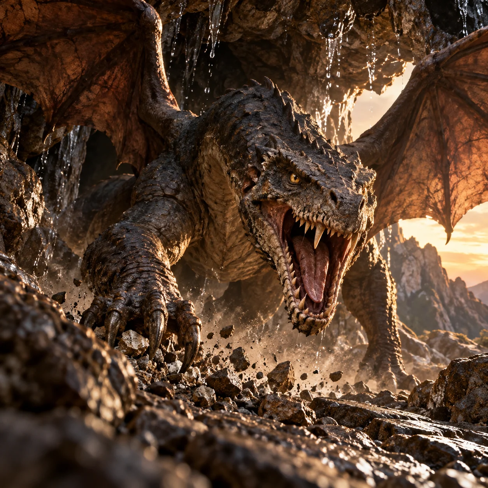
Flying dragon emerging from its documented mountain cave.
Aura: Threat from ravaging dragon identity and running/flying action (c01,c04).
Audit ciri dan sumber
- [object Object]
- [object Object]
- [object Object]
Native and 200px inspected: all seven Sangar checks pass. Single readable dragon head, two wings and visible forelegs; rushing cave emergence, damp rock and physical debris, no magical effects, text or ornamental glyphs. Conventional reptilian details are editorial, not source-specific anatomy.
Review sumberONE original square premium painterly cinematic Mitoloka illustration of Drac de Sant Llorenc del Munt, the fierce flying dragon that ravaged the Catalan mountain massif.
ANATOMY: one fierce dragon with one head, two eyes, a running animal body and two bird-of-prey-like wings; no elaborate horns or invented ornaments [drac-de-sant-llorenc-del-munt-c01, drac-de-sant-llorenc-del-munt-c04]
MOMENT: surge out of the dripping mountain cave toward the viewer, jaws open, wings unfolding, forefeet grinding loose stones.
POWER: physical destruction of crops and livestock is documented; show only stones dislodged by its rush, no fire breath or magical effect [drac-de-sant-llorenc-del-munt-c01, drac-de-sant-llorenc-del-munt-c04]
SCALE & CAMERA: extreme low angle; tightly framed creature fills the square, no invented giant scale or human comparison.
LIGHT & WEATHER: one shaft of late sunset from outside the cave, rim light, cave moisture and natural stone dust.
SURFACE: rough dark reptilian hide, dusty claws, damp stone, weathered wing membranes.
SETTING: water-seeping cave on Sant Llorenc del Munt [drac-de-sant-llorenc-del-munt-c09]
MOOD: menacing; dangerous and imposing, never cute, calm or decorative.
HARD CONSTRAINTS: no text, lettering, logo, border, frame or watermark; no extra heads, limbs or fingers; no design borrowed from any film, game, anime or comic; no nudity or explicit gore; no generic glow aura, neon outline or energy ribbons. No fire breath, lightning, glyphs or tattoos.
毛龙
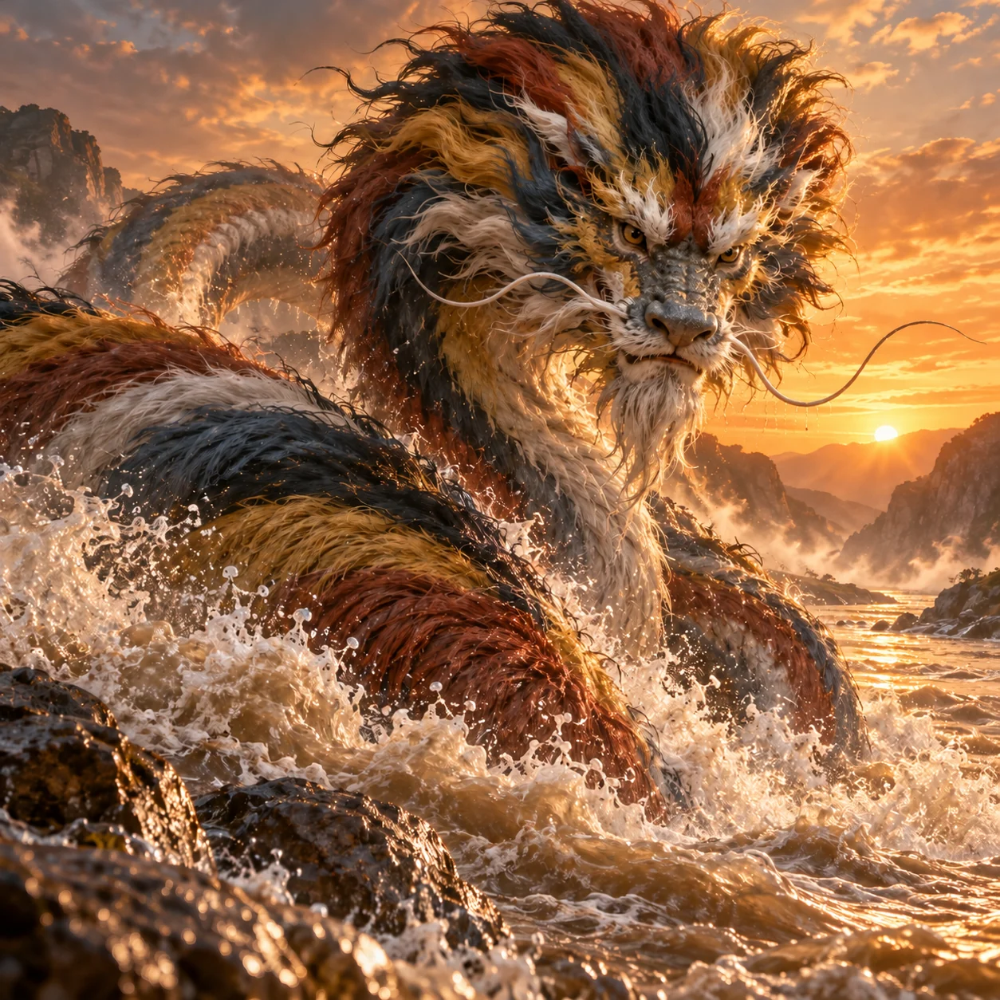
Five-coloured hairy Maolong rearing at its documented release site.
Aura: Awe from the five-coloured hairy dragon (c01,c02); no magical aura.
Audit ciri dan sumber
- [object Object]
- [object Object]
Native and 200px inspected, all seven Sangar checks pass after targeted correction removing all antlers/horns. Single head, two eyes, five readable fur hues, rearing hairy dragon physically splashing river. No magic, text, ornamental marks or invented giant comparison.
Review sumberONE original square premium painterly cinematic Mitoloka illustration of Maolong, a hairy five-coloured dragon of Chinese tradition associated with Yu and the regulation of rivers.
ANATOMY: one recognizable Chinese dragon with one head, two eyes, long coiling body thickly covered in hair of five distinct natural colours: black, white, red-brown, ochre-yellow and blue-grey; NO HORNS OR ANTLERS OF ANY KIND, no wings, no ornaments, no writing [wd-q10371883-c01, wd-q10371883-c02]
MOMENT: rear upward from the river bend toward the viewer, its long hairy coils pushing real water aside; protective commanding expression.
POWER: no documented supernatural power; awe through documented hairy dragon anatomy, movement and light only. River water splashes because its body moves, no levitating water or magic.
SCALE & CAMERA: extreme low angle; tightly framed head and coils, no humans or invented scale comparison.
LIGHT & WEATHER: one low amber sunset, rim light, natural river spray and mist.
SURFACE: saturated wet coarse fur, five strongly readable colour regions, rough river rocks.
SETTING: bend of the Yellow River where Yu released this dragon [wd-q10371883-c08]
MOOD: awe-inspiring; dangerous and imposing, never cute, calm or decorative; respectful Chinese legendary creature.
HARD CONSTRAINTS: no text, lettering, logo, border, frame or watermark; no extra heads, limbs or fingers; no design borrowed from any film, game, anime or comic; no nudity or explicit gore; no generic glow aura, neon outline or energy ribbons. No lightning, fire breath, glyphs, tattoos or jewel. Edit the referenced image: remove every antler, horn and pointed horn-like structure from the head. Replace those areas with soft five-coloured fur. Preserve the one head, two eyes, long hairy body, river contact and existing composition.
Draak van India en Ethiopië
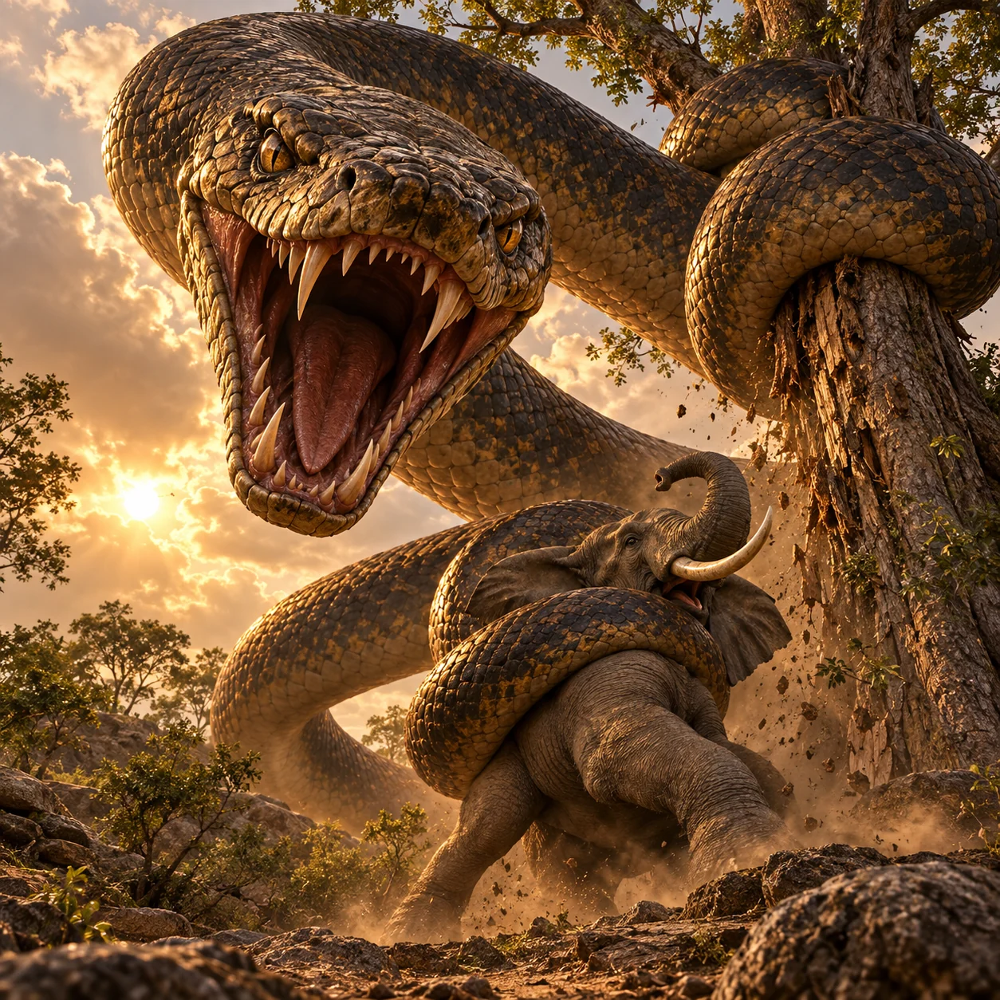
Gigantic serpent attacking an elephant beside a tree.
Aura: Threat from documented elephant-strangling gigantic dragon-serpent (c01,c05,c07).
Audit ciri dan sumber
- [object Object]
- [object Object]
- [object Object]
Native and 200px inspected, all seven Sangar checks pass. One limbless sharp-toothed serpent head, tree-gripping coil and elephant-strangling tail, no gore. Giant scale supported by c01/c09, attack by c05/c07. No magic, external gemstone, text or markings.
Review sumberONE original square premium painterly cinematic Mitoloka illustration of the Dragon of India and Ethiopia, a gigantic fifty-five-metre dragon-serpent known for strangling elephants with its tail.
ANATOMY: one colossal limbless serpent, exactly one head and two eyes, long heavy coiling tail, sharp teeth; no legs, wings, horns or exterior gemstones [draak-van-india-en-ethiopie-c01, draak-van-india-en-ethiopie-c02, draak-van-india-en-ethiopie-c06]
MOMENT: thrust its open toothed head toward the viewer while one enormous coil grips a thick tree; an elephant below struggles against a tail loop, no injury or gore.
POWER: physically coil around an elephant's neck while gripping the tree, the documented strangling behaviour; no magical paralysis glow or fire effects [draak-van-india-en-ethiopie-c05, draak-van-india-en-ethiopie-c07]
SCALE & CAMERA: extreme low angle; elephant clearly smaller than the immense head and coils, a fifty-five-metre serpent fills the frame [draak-van-india-en-ethiopie-c01].
LIGHT & WEATHER: one low amber sun through cloud, rim light, dust shaken from tree bark.
SURFACE: heavy rough bronze-black scales, cracked bark, dusty elephant hide.
SETTING: wooded rocky ground in the dragon's India and Ethiopia tradition [draak-van-india-en-ethiopie-c01, draak-van-india-en-ethiopie-c05]
MOOD: menacing; dangerous and imposing, never cute, calm or decorative.
HARD CONSTRAINTS: no text, lettering, logo, border, frame or watermark; no extra heads, limbs or fingers; no design borrowed from any film, game, anime or comic; no nudity or explicit gore; no generic glow aura, neon outline or energy ribbons. No wings, limbs, lightning, glyphs, tattoos or external head jewel; head diamond is internal and unseen.
翳鸟
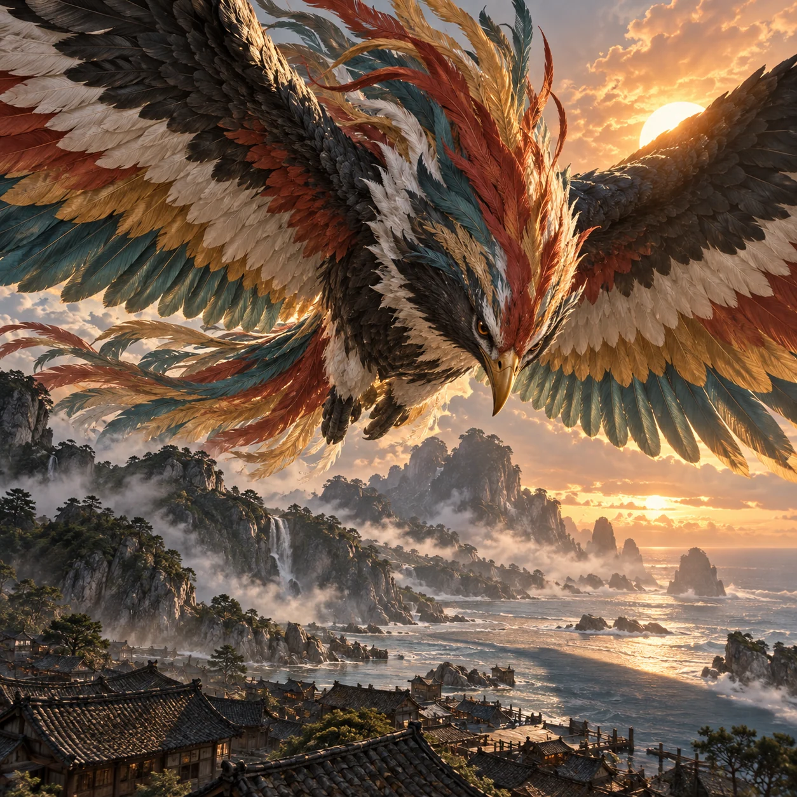
Five-coloured phoenix-kind Yiniao shading a settlement overhead.
Aura: Awe from settlement-shading flight (c02,c09) and five-coloured phoenix-kind form (c01,c06).
Audit ciri dan sumber
- [object Object]
- [object Object]
- [object Object]
Native and 200px inspected: all seven Sangar checks pass. Single five-coloured phoenix-kind bird, one head and beak, two wings and two tucked feet; overhead downstroke and settlement-shading scale remain clear at 200px. No flame, magic, text or symbols.
Review sumberONE original square premium painterly cinematic Mitoloka illustration of Yiniao, the five-coloured phoenix-kind bird whose flight shades a settlement in the Shan Hai Jing.
ANATOMY: exactly one living bird with one head, two eyes, one beak, two feathered wings and two tucked bird feet; elaborate flowing phoenix-kind plumage with five visibly distinct natural colours black, white, rust-red, antique yellow-gold and blue-green [wd-q22101447-c01, wd-q22101447-c06, wd-q22101447-c08]
MOMENT: sweep overhead toward the viewer in a forceful downstroke, immense feathered wings spread across the square, head looking downward.
POWER: the immense bird physically eclipses the sun and shades the small settlement below; no fire, magic or luminous aura [wd-q22101447-c02, wd-q22101447-c09]
SCALE & CAMERA: extreme low angle; bird fills the square, village roofs tiny at bottom and its wings cast a broad physical shadow [wd-q22101447-c02].
LIGHT & WEATHER: one partly occluded sunset sun behind a wing edge, hard rim light, natural sea mist.
SURFACE: layered coarse feathers with five legible colour families, weathered little roof tiles and sea cliffs.
SETTING: Mount She in the Northern Sea, river flowing east from the mountain [wd-q22101447-c03, wd-q22101447-c04]
MOOD: awe-inspiring; imposing and overwhelming, never cute, calm or decorative; respectful fabulous Chinese bird.
HARD CONSTRAINTS: no text, lettering, logo, border, frame or watermark; no extra heads, limbs or fingers; no design borrowed from any film, game, anime or comic; no nudity or explicit gore; no generic glow aura, neon outline or energy ribbons. No fiery phoenix effect, lightning, glyphs or tattoos.
Gegant del Romaní
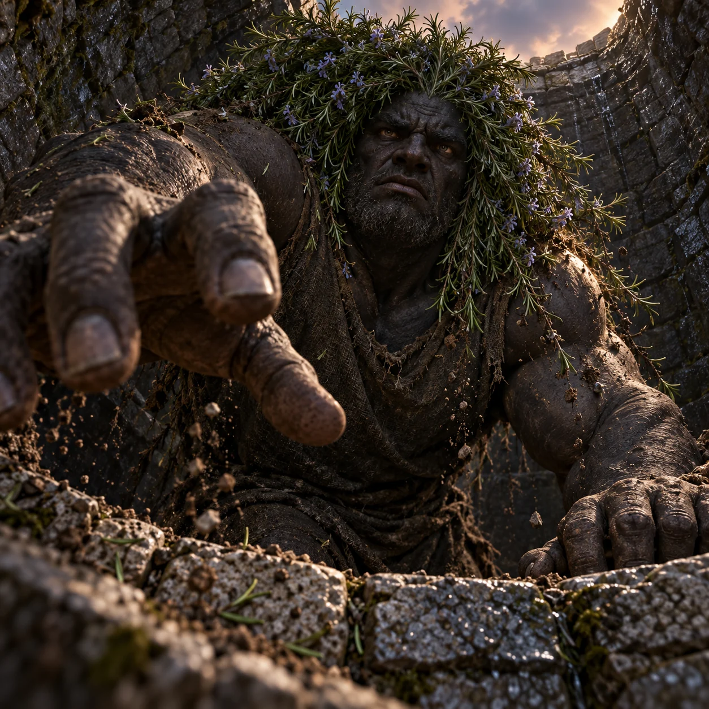
Rosemary-haired giant heaving out of his well.
Aura: Threat from enormous black rosemary-haired giant physically emerging to abduct (c01,c02,c03).
Audit ciri dan sumber
- [object Object]
- [object Object]
- [object Object]
Native and 200px inspected, all seven Sangar checks pass. Huge black giant reaching out of stone well; rosemary sprigs and flowers visibly form hair, one head/two eyes/two arms, gripping and reaching hands without extra digits. Opaque tunic. No magical effect, text or markings; giant size is c03.
Review sumberONE original square premium painterly cinematic Mitoloka illustration of Gegant del Romani, Aixa the huge black giant whose hair is rosemary and who waits in a well or chasm.
ANATOMY: one huge black-skinned humanoid giant with one head, two eyes, two arms and two legs; hair is dense recognizable living rosemary sprigs, narrow needle leaves and tiny muted blue flowers; opaque plain dark rough tunic covers chest and waist; no horns or ornaments [gegant-del-romani-c01, gegant-del-romani-c03, gegant-del-romani-c04]
MOMENT: heave upward from a narrow stone well toward the viewer, one hand hooking firmly over the rim, the other reaching forward to seize the intruder; rosemary hair shakes loose soil.
POWER: documented abduction by emerging after someone pulls his rosemary hair; portray the physical emergence only, no magic [gegant-del-romani-c02, gegant-del-romani-c05]
SCALE & CAMERA: extreme low angle from the well rim; giant's hand dwarfs the stones and his huge head fills the square, enormous shoulders emerging [gegant-del-romani-c03].
LIGHT & WEATHER: one shaft of dusk light over the rim, rim light, falling soil and cave moisture.
SURFACE: dark coarse skin, scratchy opaque cloth, gritty stone, distinct dusty rosemary needles.
SETTING: deep stone well or chasm where he waits [gegant-del-romani-c01]
MOOD: menacing; dangerous and imposing, never cute, calm or decorative.
HARD CONSTRAINTS: no text, lettering, logo, border, frame or watermark; no extra heads, limbs or fingers; no design borrowed from any film, game, anime or comic; no nudity or explicit gore; no generic glow aura, neon outline or energy ribbons. No horns, tattoos, glyphs, snakes for hair or glowing eyes.
Houéran
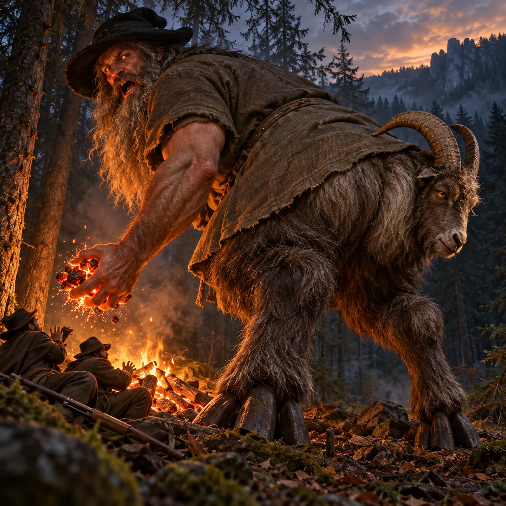
Three-quarter rear view of goat-legged forest guardian showing horned goat-head backside while grasping embers.
Aura: Awe from giant goat hybrid anatomy and bare-handed ember handling (c04,c10,c13).
Audit ciri dan sumber
- [object Object]
- [object Object]
- [object Object]
Native and 200px inspected, all seven Sangar checks pass. One bearded hatted main head plus exactly the documented horned goat-head backside; two goat legs/hooves, hand gripping coals, second arm occluded naturally. Guardian confronts small poachers, no gore. Readable unusual anatomy and fire-handling at thumbnail size; no writing or magic beams.
Review sumberONE original square premium painterly cinematic Mitoloka illustration of Houeran, the goat-legged giant guardian of Vosges forests who cries out at poachers and can hold burning embers unharmed.
ANATOMY: exactly one giant humanoid upper body with one main head, two arms, two goat legs with cloven hooves; a long shaggy beard, piercing firelit eyes, large plain black hat with turned-down brim; his backside itself is a second distinct goat head with two curved goat horns, clearly attached at the rear pelvis below the tunic, not a separate animal; opaque rough tunic covers torso and front hips [houeran-c04, houeran-c10, houeran-c13]
MOMENT: crouch beside a poacher's little forest fire, grasp a handful of real burning embers while turning his bearded main face over his shoulder toward the viewer, mouth open in a commanding shout; compose three-quarter rear view so the goat-head backside and its horns remain unmistakably visible.
POWER: hold real glowing coals without burns; fire stays only in the coals and small ground fire, no beams or magic aura [houeran-c10]
SCALE & CAMERA: extreme low angle; giant fills square, small forest fire and tree trunks demonstrate sourced giant scale [houeran-c01, houeran-c13].
LIGHT & WEATHER: one small ground fire as dominant orange light, rim light, ordinary fire smoke in the dusk forest.
SURFACE: shaggy beard, coarse goat fur on legs and backside head, rough opaque cloth, charred embers.
SETTING: Vosges forest near Haut-Roc above the Moselotte basin [houeran-c01, houeran-c02]
MOOD: awe-inspiring fierce forest protector confronting thieves, never malicious toward the forest, cute, calm or decorative.
HARD CONSTRAINTS: no text, lettering, logo, border, frame or watermark; no extra heads beyond the one main head and specifically documented backside goat head, limbs or fingers; no design borrowed from any film, game, anime or comic; no nudity or explicit gore; no generic glow aura, neon outline or energy ribbons. No main-head horns, tattoos, glyphs or magical eye beams. Keep backside goat-head feature fully visible.
Isabit
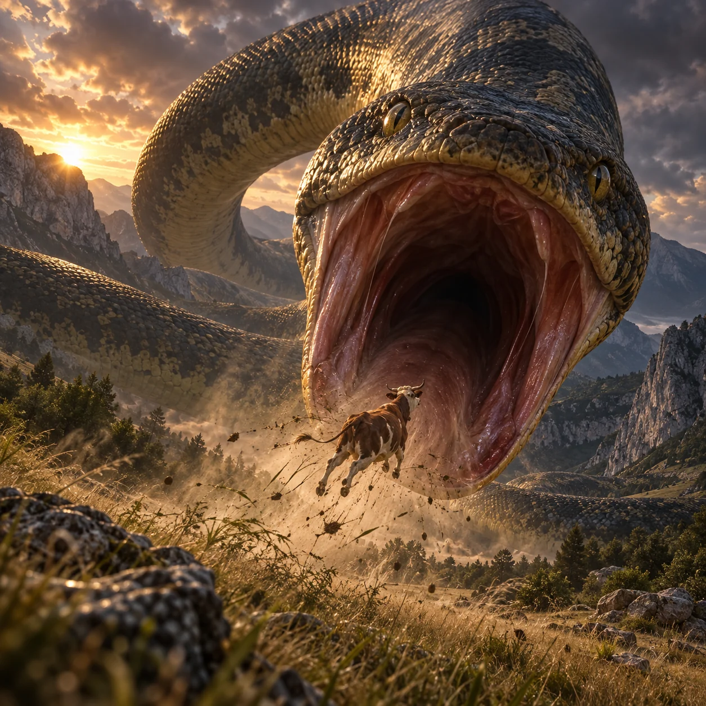
Gigantic Isabit inhaling one whole cow over the Argeles valley.
Aura: Threat from huge cow-swallowing serpent and physically lifting suction (c02,c03,c08).
Audit ciri dan sumber
- [object Object]
- [object Object]
- [object Object]
Native and 200px inspected, all seven Sangar checks pass. Single limbless giant serpent, two eyes, enormous cow-swallowing mouth; intact cow lifted toward mouth and dust/grass directed inward. No flames or magic, gore, lettering or marks. Coils and valley plus tiny cow convey sourced giant scale.
Review sumberONE original square premium painterly cinematic Mitoloka illustration of Isabit, the gigantic Pyrenean serpent whose huge mouth sucks whole herds from the Argeles valley.
ANATOMY: exactly one gigantic limbless serpent with one head, two eyes, an exceptionally broad huge open mouth capable of swallowing a cow whole, massive long coiling body; no horns, wings or added limbs [isabit-c02, isabit-c08]
MOMENT: lean down over the valley toward the viewer and suck prey inward; one intact small cow lifted just off the ground toward the vast mouth, grass and dust bend in the same direction, no injury.
POWER: documented inhalation lifts livestock into its mouth; portray air physically moving grass, dust and a whole cow, no magic beams or glowing vortex; omit the optional flame-spitting variant [isabit-c03, isabit-c08]
SCALE & CAMERA: extreme low angle; immense head fills upper frame, cow very small beneath the jaws, huge body arches over mountain slopes [isabit-c02].
LIGHT & WEATHER: one low dusk sun through mountain cloud, rim light, physically inhaled dust and grass.
SURFACE: rough olive-black serpent scales, dry grass, dusty limestone.
SETTING: Argeles valley in the Pyrenees [isabit-c08]
MOOD: menacing; dangerous and imposing, never cute, calm or decorative.
HARD CONSTRAINTS: no text, lettering, logo, border, frame or watermark; no extra heads, limbs or fingers; no design borrowed from any film, game, anime or comic; no nudity or explicit gore; no generic glow aura, neon outline or energy ribbons. No horns, dragon legs, wings, lightning, tattoos or glyphs.
Mekhala
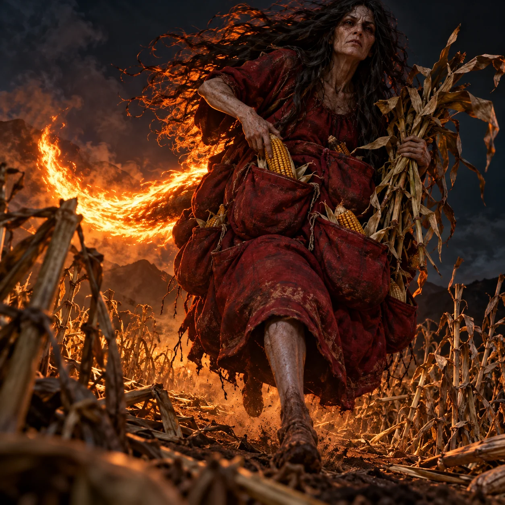
Clothed red-tunic Mekhala leaping through fields with harvested crops and comet-like tail.
Aura: Imposing motion from c11 leap, endless food pockets c12 and comet-like fiery tail c05.
Audit ciri dan sumber
- [object Object]
- [object Object]
- [object Object]
Native and 200px inspected; all seven Sangar checks pass. Tall thin livid woman, tangled hair, many-pocket opaque red tunic, two arms, leaping/advancing legs, food insertion and sourced comet-like fiery tail. Covered belly blends into lower tunic volume. Flame confined to tail; no eye beam, nudity, gore, lettering or religious caricature.
Review sumberONE original square premium painterly cinematic Mitoloka illustration of Mekhala, the harvest-stealing being of La Paz associated with drought, frost and famine in Andean tradition.
ANATOMY: one tall thin woman-shaped being, one head, two eyes, two arms and two legs, livid flabby skin and long loose tangled hair; belly hanging toward knees fully covered by an opaque long red tunic with many large bulging food pockets; a documented fiery comet-like tail behind her, not horns or wings [mekhala-c04, mekhala-c05, mekhala-c06, mekhala-c10]
MOMENT: leap forward out of the dark fields toward the viewer, one hand stuffs a whole harvested maize ear into a deep red tunic pocket while the other clutches stalks, hair streaming.
POWER: steal best crops into never-filled pockets; damaged dry stalks lie behind her, real flame trails from her specifically documented comet-like tail only; no eye beams, no generic aura [mekhala-c05, mekhala-c12, mekhala-c13]
SCALE & CAMERA: extreme low angle; tight close framing from tunic hem to hair, maize stalks are normal height; tall but not gigantic, no invented monumental scale.
LIGHT & WEATHER: one warm light source from the fiery tail, rim light, ordinary smoke and dry field dust at night.
SURFACE: rough faded red cloth, wrinkled livid skin, tangled dark hair, dry maize leaves and soot.
SETTING: cultivated fields and gardens of La Paz/Yungas tradition [mekhala-c01, mekhala-c02, mekhala-c12]
MOOD: awe-inspiring and unsettling, imposing manifestation of crop devastation; respectful Andean folklore, never cute, calm or decorative.
HARD CONSTRAINTS: no text, lettering, logo, border, frame or watermark; no extra heads, limbs or fingers; no design borrowed from any film, game, anime or comic; no nudity or explicit gore; no generic glow aura, neon outline or energy ribbons. No horns, wings, tattoos, glyphs or removed eyes. Fire only from the documented tail; no burning village.
Sin-you
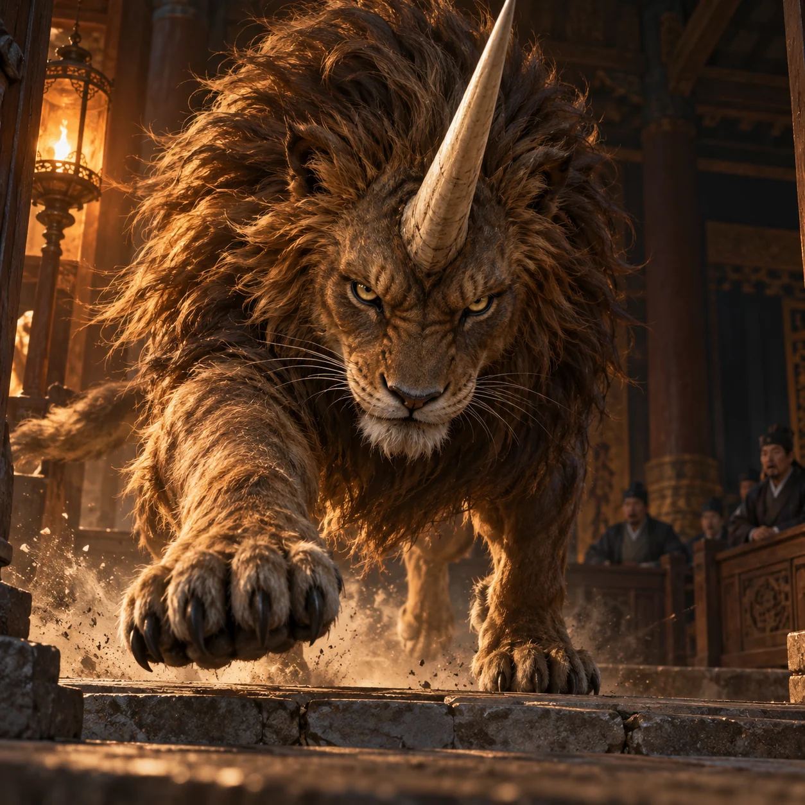
Feline-pawed single-horned Sin-you leaping in court.
Aura: Awe through single-horned feral judge-beast physically leaping (c02,c04,c06), not magical aura.
Audit ciri dan sumber
- [object Object]
- [object Object]
- [object Object]
Native and 200px inspected, all seven Sangar checks pass. Single feline-bodied mane-bearing quadruped with exactly one unbranched central horn and two piercing eyes; forward leap/paw impact, court setting. Hindlimbs naturally partly occluded, no additional limbs. No literal eye fire, magic, injury, text or symbols.
Review sumberONE original square premium painterly cinematic Mitoloka illustration of Sin-you, the feral imposing single-horned beast of divine judgment that detects guilt and protects the innocent.
ANATOMY: one large quadruped with a feline body and feline paws, exactly four legs, one head, two piercing non-glowing eyes, dense shaggy mane, exactly ONE unbranched horn rising from the centre of its forehead; no other horns, antlers, wings or scales [sin-you-c02, sin-you-c03, sin-you-c04, sin-you-c07]
MOMENT: leap forward toward the viewer from a court threshold, one forepaw outstretched and central horn lowered in a commanding confrontation; mane shaken by the rush, no victim contact.
POWER: detects guilt with a glance and leaps to strike false witnesses with its horn; show physical leap and focused eyes only, no supernatural beams or visible truth spell [sin-you-c05, sin-you-c06]
SCALE & CAMERA: extreme low angle; tightly frame its large head, central horn and four readable paws, no cosmic or invented giant scale.
LIGHT & WEATHER: one amber oil lamp from the side, rim light, ordinary court dust kicked by paws.
SURFACE: coarse tangled dark bronze fur, matte ivory central horn, scratched stone threshold.
SETTING: a ruler's or judge's court, shadowed timber hall with plain stone floor [sin-you-c06]
MOOD: awe-inspiring; fierce imposing guardian of justice, never malicious toward innocents, cute, calm or decorative.
HARD CONSTRAINTS: no text, lettering, logo, border, frame or watermark; no extra heads, limbs or fingers; no design borrowed from any film, game, anime or comic; no nudity or explicit gore; no generic glow aura, neon outline or energy ribbons. Exactly ONE smooth unbranched central horn. No antlers, side horns, glyphs, tattoos or magical eye flames.
王馀鱼
Menunggu gambar yang lolos audit
頽馬
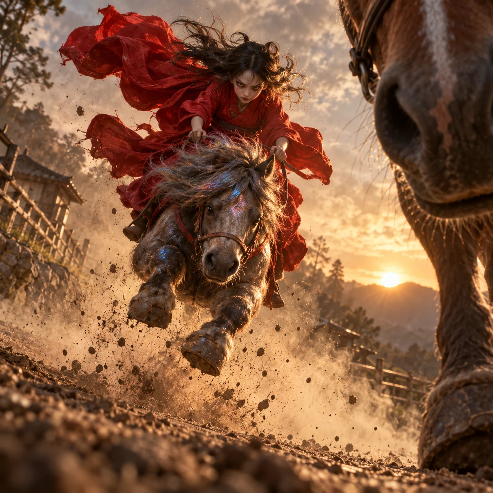
Small scarlet spectral princess on airborne iridescent pony amid dust.
Aura: Awe from small airborne scarlet princess on iridescent pony and real dust cloud (c04,c07).
Audit ciri dan sumber
- [object Object]
- [object Object]
- [object Object]
Native and 200px inspected, all seven Sangar checks pass. One scarlet fully clothed small woman on one small airborne iridescent pony; human head/two arms, pony head/two eyes/four limbs with hindlimbs naturally occluded. Normal horse muzzle at edge provides scale context. Aggressive aerial descent and dust are visible, no magic beams, flames, writing or added anatomy.
Review sumberONE original square premium painterly cinematic Mitoloka illustration of Taiba in the Giba princess variant, a small spectral scarlet-clad woman riding a little iridescent pony through airborne dust in Japanese horse-harming folklore.
ANATOMY: exactly one small woman with one head, two eyes, two arms and two legs in fully opaque plain scarlet robes, riding exactly one little pony with one head, two eyes and four legs; pony's hair has subtle natural iridescent sheen, no wings, horns or invented anatomy [wd-q11665033-c04, wd-q11665033-c07]
MOMENT: rush diagonally downward toward the viewer astride the airborne pony, robe sleeves and mane whipped backward, woman leans forward with fierce focused expression, pony forelegs striking toward camera.
POWER: documented aerial approach accompanied by a cloud of dust; dust swirls physically around airborne rider, no laser, generic aura, lightning or flame [wd-q11665033-c04, wd-q11665033-c07]
SCALE & CAMERA: extreme low angle macro close framing of the SMALL rider and LITTLE pony; a normal-size horse muzzle occupies one distant side edge and is larger than the tiny rider, proving no invented giant size.
LIGHT & WEATHER: one low dusk sun, rim light, dense ordinary airborne dust cloud.
SURFACE: coarse scarlet cloth, pony hair with restrained bronze-blue iridescent reflections, gritty dust.
SETTING: dusty horse path in Honshu or Shikoku tradition [wd-q11665033-c01, wd-q11665033-c07]
MOOD: awe-inspiring and ominous, imposing spectral aerial approach, respectful Japanese folklore, never cute, calm or decorative.
HARD CONSTRAINTS: no text, lettering, logo, border, frame or watermark; no extra heads, limbs or fingers; no design borrowed from any film, game, anime or comic; no nudity or explicit gore; no generic glow aura, neon outline or energy ribbons. No giant woman or giant pony, wings, horns, tattoos, glyphs, flames or eye beams. No ordinary full-size horse rider.
Kutsulan
Menunggu gambar yang lolos audit
계룡
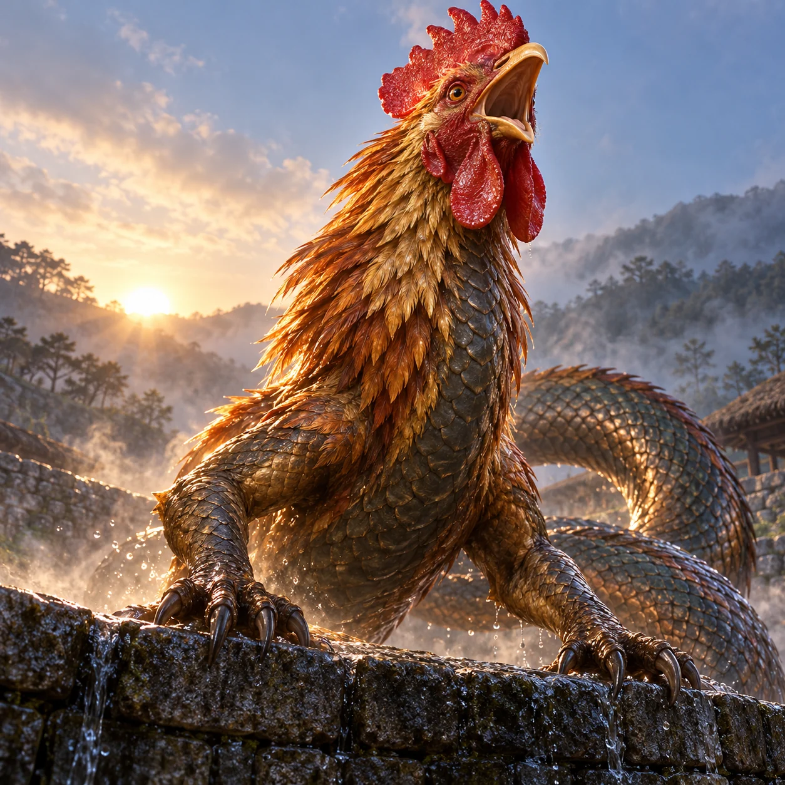
Auspicious rooster-headed Gyeryong rearing beside Alyeong well.
Aura: Awe from auspicious rooster-headed dragon manifestation (c01,c07), no magical aura.
Audit ciri dan sumber
- [object Object]
- [object Object]
Native and 200px inspected, all seven Sangar checks pass. One unmistakable rooster head with beak, comb and wattles joins scaled coiled dragon body; two visible forelimbs braced on well rim. Rearing/open-beak crow moment, auspicious imposing expression. No horns/wings, magic, text, glyphs or birth gore.
Review sumberONE original square premium painterly cinematic Mitoloka illustration of Gyeryong, the auspicious rooster-headed dragon that appeared beside Alyeong well in the Silla foundation myth.
ANATOMY: exactly one dragon with one unmistakeable ROOSTER HEAD, two bird eyes, one rooster beak, fleshy red rooster comb and wattles, feathered neck joining a long coiled dragon body; two visible forelimbs with clear shoulder/armpit regions, lower body coiled; no horns, antlers, wings or ornaments [wd-q131389273-c01, wd-q131389273-c05]
MOMENT: rear its rooster head toward the viewer and brace both forefeet against the wet stone well rim, coiled body shifting with commanding force; beak open as if a powerful crow.
POWER: no documented power to display; awe through the auspicious rooster-dragon appearance and physical movement only; do not depict birth, dissection or magic [wd-q131389273-c07]
SCALE & CAMERA: extreme low angle; close crop from well rim to towering-in-frame rooster comb, no humans or unsupported giant size comparison.
LIGHT & WEATHER: one low dawn sun, rim light, ordinary cool mist and a few droplets from wet well stones.
SURFACE: coarse copper-gold rooster feathers, dark bronze textured dragon scales, moist red comb, weathered stone.
SETTING: beside Alyeong well in Saryang-ri [wd-q131389273-c03, wd-q131389273-c06]
MOOD: awe-inspiring auspicious manifestation; commanding and imposing, never evil, cute, calm or decorative; respectful Korean myth.
HARD CONSTRAINTS: no text, lettering, logo, border, frame or watermark; no extra heads, limbs or fingers; no design borrowed from any film, game, anime or comic; no nudity or explicit gore; no generic glow aura, neon outline or energy ribbons. No horns, antlers, wings, lightning, fire breath, glyphs, tattoos or jewels. Rooster head must remain unmistakable at thumbnail size.
陵鱼
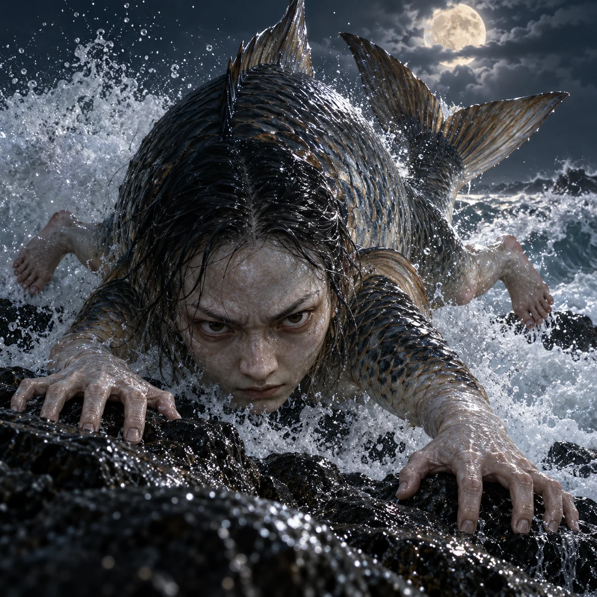
Classic Shan Hai Jing Lingyu emerging from surf with human hands and feet on fish body.
Aura: Uncanny threat through human face and hands/feet on fish body (c01,c06), no magic aura.
Audit ciri dan sumber
- [object Object]
- [object Object]
Native and 200px inspected; all seven Sangar checks pass. One human face with two eyes directly on fish body, two human hands and two human feet, ordinary fish tail/fin. Forward surf emergence strongly uncanny at thumbnail. No human torso or mermaid chest, tentacles, invented wind power, writing, gore or magic.
Review sumberONE original square premium painterly cinematic Mitoloka illustration of Lingyu in the classic Shan Hai Jing form, a sea fish with a human face, hands and feet.
ANATOMY: exactly one fish-bodied creature with one human face and two human eyes directly on the front of a complete scaled fish body, two short forelimbs ending in unmistakable human hands and two short rear limbs ending in human feet; ordinary fish tail behind; NO human chest or torso, no mermaid anatomy, no tentacles, horns or triangular spines [wd-q15892530-c01, wd-q15892530-c06]
MOMENT: surge out of a breaking wave toward the viewer, both human hands reach across the foreground rock, human-faced head angled downward with fierce focused stare; rear human feet visible flanking the fish tail.
POWER: no documented power in selected classic form; real water splashes only because the body moves through surf. Do not mix the disputed wind-raising variant into the classic anatomy.
SCALE & CAMERA: extreme low angle; tightly frame human face, fish body and four readable human-ended limbs, no humans or invented giant scale.
LIGHT & WEATHER: one low moon beyond sea cloud, rim light, natural saltwater splash and spray.
SURFACE: wet dark carp-like scales, pale weathered human face/hands/feet, textured black coastal rock.
SETTING: sea of the Gushe region in the classic account [wd-q15892530-c06]
MOOD: menacing and uncanny; dangerous and imposing at intimate range, never cute, calm or decorative; respectful fabulous Chinese creature.
HARD CONSTRAINTS: no text, lettering, logo, border, frame or watermark; no extra heads, limbs or fingers; no design borrowed from any film, game, anime or comic; no nudity or explicit gore; no generic glow aura, neon outline or energy ribbons. No human torso, breasts, mermaid body, tentacles, triangular spines, horns, tattoos, glyphs, lightning or water beams.
木客鸟
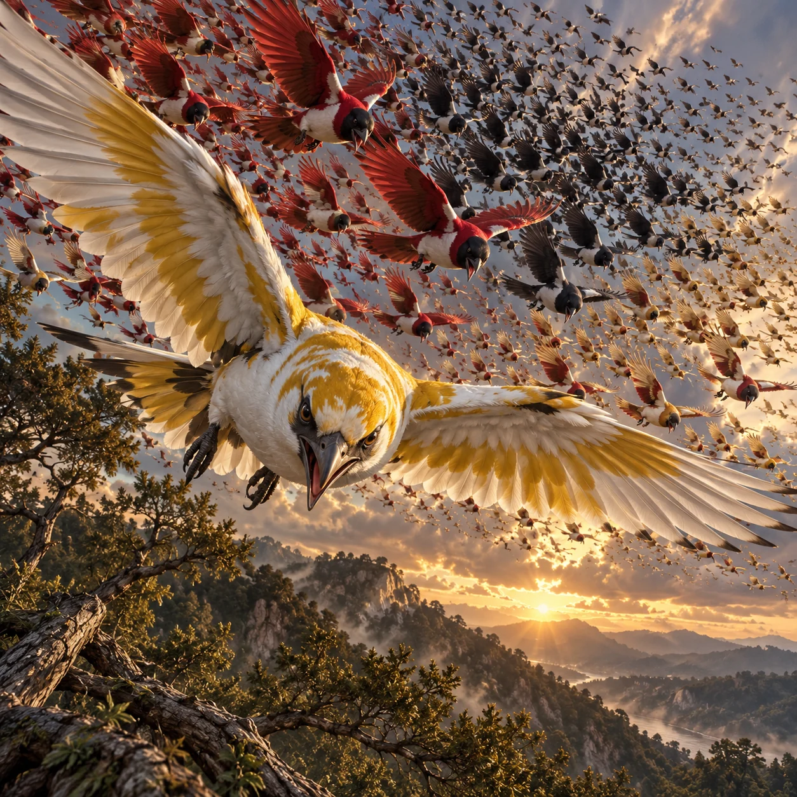
Ordered aerial host of magpie-sized Muke birds, white-and-yellow junzhang in close foreground.
Aura: Awe from disciplined flock of hundreds to thousands (c05) and colour-rank variants (c06), no magical aura.
Audit ciri dan sumber
- [object Object]
- [object Object]
- [object Object]
Native and 200px inspected; all seven Sangar checks pass. Foreground white-yellow bird with one head/two eyes/two wings/two feet, red/black/pale birds form overwhelming ordered flock of hundreds. Strong descending collective action, ordinary small size preserved through close camera and near branch. No crowns, mutation, power glow, writing or symbols.
Review sumberONE original square premium painterly cinematic Mitoloka illustration of the Muke birds, magpie-sized fabulous birds of Luling that fly in vast perfectly ordered flocks and have colours compared to ranks of officials.
ANATOMY: living birds of ordinary magpie size and bird anatomy, each exactly one head, two eyes, one beak, two feathered wings and two bird feet; foreground junzhang bird has white-and-yellow patterned plumage, red wubo birds fly ahead, black qianxia and pale-yellow mixed-red gongcao birds behind; no crowns, humanoid faces, horns or invented ornaments [wd-q22098972-c05, wd-q22098972-c06]
MOMENT: sweep in a steep coordinated diving turn toward the viewer; foremost white-and-yellow bird looks directly down into lens with open natural beak and spread wings, hundreds behind repeat the same disciplined turn in powerful ordered layers.
POWER: no documented supernatural effect; awe from physically flying flock of hundreds to thousands, in perfect order and separate from other birds [wd-q22098972-c05]
SCALE & CAMERA: extreme low angle macro close view of the nearest magpie-sized bird, not a giant; huge flock fills the sky through number and depth, ordinary branches near the foreground show small actual size.
LIGHT & WEATHER: one late sunset behind cloud, rim light, natural wind bending feathers and fine dust over wooded ridges.
SURFACE: coarse white and yellow foreground feathers, red/black/pale-red birds deeper in flock, rough bark.
SETTING: wooded hills east of Luling, the documented flock habitat [wd-q22098972-c06]
MOOD: awe-inspiring and overwhelming disciplined avian host, dangerous and imposing, never cute, calm or decorative.
HARD CONSTRAINTS: no text, lettering, logo, border, frame or watermark; no extra heads, limbs or fingers; no design borrowed from any film, game, anime or comic; no nudity or explicit gore; no generic glow aura, neon outline or energy ribbons. No enlarged giant birds, magical feathers, eye beams, crowns, glyphs or tattoos. Ordered flock must dominate the square.
大鮫魚
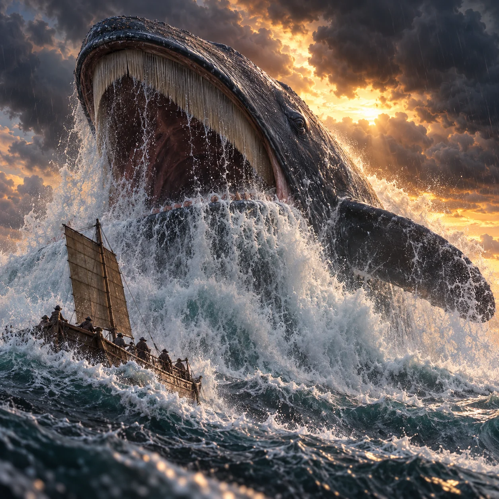
Li Bai enormous-whale Daikogyo breaching above a Penglai expedition boat.
Aura: Awe from enormous whale and generated waves/thunderclouds (c03), without lightning or generic aura.
Audit ciri dan sumber
- [object Object]
- [object Object]
- [object Object]
Native and 200px inspected, all seven Sangar checks pass. Single immense baleen whale breaches above tiny sea expedition boat, one head and ordinary whale eye/flipper visible, far eye/flipper and tail naturally concealed by bulk/waves. Towering wave and dark thunderclouds as c03, no lightning. No monster teeth, mutation, injury, text or symbols.
Review sumberONE original square premium painterly cinematic Mitoloka illustration of Daikogyo in Li Bai's enormous-whale version, the legendary sea creature blocking the voyage to Penglai and raising waves and thunderclouds.
ANATOMY: exactly one enormous recognizable whale with one head, two eyes, two pectoral flippers and a broad horizontal tail fluke; vast open whale mouth with ordinary baleen rather than monster teeth, no horns, dragon head or added limbs [wd-q22123521-c01, wd-q22123521-c03]
MOMENT: breach toward the viewer above a small ancient expedition boat, vast whale head and one heavy flipper drive a wall of seawater upward; boat pitches in the wake below, no injured people.
POWER: documented enormous whale generates waves and thunderclouds; show a physical heaving wall of seawater and dense dark thunderclouds overhead, WITHOUT lightning [wd-q22123521-c03]
SCALE & CAMERA: extreme low angle from waterline; small expedition boat dwarfed by immense whale head, sourced enormous scale [wd-q22123521-c03, wd-q22123521-c08].
LIGHT & WEATHER: one break of amber sunset behind the thunderclouds, rim light, storm rain and enormous salt spray.
SURFACE: wet charcoal whale hide with ordinary scarring, coarse baleen, foaming grey seawater, worn boat timber.
SETTING: sea voyage seeking Penglai, the water blocked by the giant fish [wd-q22123521-c01, wd-q22123521-c06]
MOOD: awe-inspiring; overwhelming and imposing, never cute, calm or decorative; respectful legendary sea manifestation.
HARD CONSTRAINTS: no text, lettering, logo, border, frame or watermark; no extra heads, limbs or fingers; no design borrowed from any film, game, anime or comic; no nudity or explicit gore; no generic glow aura, neon outline or energy ribbons. NO LIGHTNING. No horns, dragon mutations, giant fangs, tattoos, glyphs, magic beams or human sea-god figure.
Demone dal dito di ferro
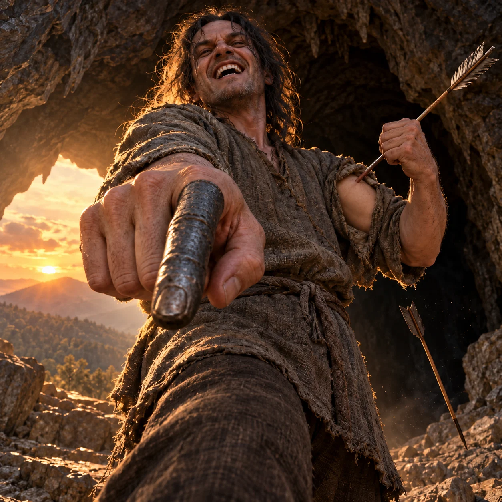
Human impersonation of iron-finger demon confronting viewer while removing an arrow.
Aura: Threat from metal finger, defiant laughter and arrow-removal regeneration (c08,c10,c14), no aura.
Audit ciri dan sumber
- [object Object]
- [object Object]
- [object Object]
Native and 200px inspected; all seven Sangar checks pass after correction. Human impersonation confronts viewer with one solid iron index finger, closed rounded metal fingertip with nail, other fingers skin; five digits on each hand. Laughing arrow-removal moment and intact upper-arm skin, no blood, horns, magic, text or cultural caricature. Foreground metal finger remains distinct at 200px.
Review sumberONE original square premium painterly cinematic Mitoloka illustration of the Iron-Fingered Demon, the Cherokee cave-dwelling shapeshifter who impersonates people, has one iron finger and laughs while removing arrows from wounds that instantly heal.
ANATOMY: exactly one human-shaped male impersonation with one head, two eyes, two arms and two legs, two normal five-fingered human hands; exactly ONE index finger on his right hand is visibly solid dark iron in the EXACT ANATOMICAL SHAPE OF A NORMAL INDEX FINGER, with two knuckle joints, smooth natural taper, rounded closed fingertip and an ordinary small fingernail, from knuckle to fingertip, the other nine fingers are ordinary flesh; fully opaque plain rough tunic and trousers, no horns, claws, tribal ornaments or invented monstrous anatomy [demone-dal-dito-di-ferro-c03, demone-dal-dito-di-ferro-c07, demone-dal-dito-di-ferro-c08]
MOMENT: step from the dark cave and thrust his iron index finger toward the viewer with severe foreshortening, face laughing defiantly; the other hand pulls one ordinary arrow from his clothed upper arm, the place beneath is intact and healed, no blood. One discarded arrow falls beside him.
POWER: wounds heal instantly when he withdraws arrows; depict smooth uninjured skin after arrow removal, no healing light or magical beams [demone-dal-dito-di-ferro-c10, demone-dal-dito-di-ferro-c14]
SCALE & CAMERA: extreme low angle; close half-body frame, iron finger dominates foreground through perspective, face and metal material both clearly readable; ordinary human actual size, no giant inflation.
LIGHT & WEATHER: one shaft of late sunset into cave, rim light, drifting natural cave dust.
SURFACE: rough worn iron on the one finger, ordinary weathered skin, coarse opaque cloth, gritty cave stone and wooden arrow shafts.
SETTING: cave in Tusquittee Mountain, North Carolina [demone-dal-dito-di-ferro-c02, demone-dal-dito-di-ferro-c07]
MOOD: imposing and unsettling human impersonator in documented Cherokee folklore, dangerous and confrontational, never cute, calm or decorative; respectful portrayal without invented cultural stereotypes.
HARD CONSTRAINTS: no text, lettering, logo, border, frame or watermark; no extra heads, limbs or fingers; no design borrowed from any film, game, anime or comic; no nudity or explicit gore; no generic glow aura, neon outline or energy ribbons. Exactly ONE normal-anatomical SOLID iron index finger, NOT a tube, gun barrel, pipe, metal claw or gauntlet. No hollow end, tube rings or cylinder. Edit the referenced image ONLY to replace its hollow cylindrical iron finger with a solid anatomical iron index finger, with knuckle joints and closed rounded fingertip and a visible ordinary fingernail. Angle the fingertip slightly sideways so its anatomy is readable. Preserve both hands with five digits each, face, arrow removal, clothing and cave composition. No horns, tattoos, glyphs, feather headdress, organs, wounds, eye beams or unsupported monster face.
Drac de Beaucaire
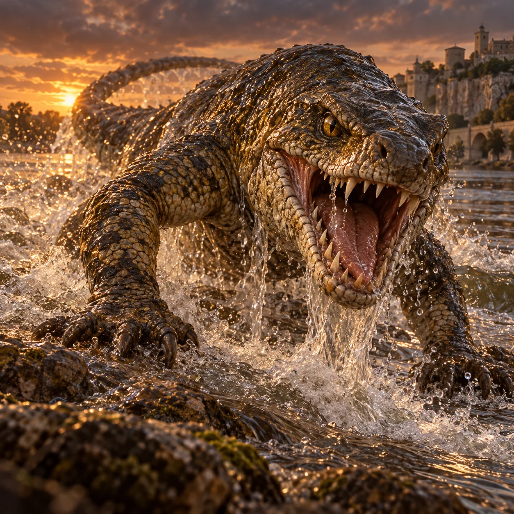
Lizard-form Rhône dragon erupting through river water.
Aura: Fearsome emergence c04 and lizard-form anatomy c14 provide menace without invented power.
Audit ciri dan sumber
- [object Object]
- [object Object]
- [object Object]
Native and 200px reviewed: all seven Sangar checks yes. Subject dominates with confrontational river emergence, threatening open jaw at 200px, one lizard head/two eyes/four-leg body and single tail, no wings or horns. Water displacement c04; lizard form c14. No magic, text, glyphs, watermark, franchise likeness, gore or nudity.
Review sumberONE original square premium painterly cinematic Mitoloka illustration of Drac de Beaucaire, the fearsome dragon of the Rhône shown in its documented lizard form.
ANATOMY: one living lizard-shaped dragon with one head, two eyes, four reptile legs and one long tail, no wings, no horns [drac-de-beaucaire-c14]
MOMENT: surge head-first out of the river toward the viewer, four feet gripping submerged stone, open jaw cutting through falling river water
POWER: river water thrown physically by its emergence, without magical beams or invisibility effect [drac-de-beaucaire-c04]
SCALE & CAMERA: extreme low angle; tight foreshortened close framing; no invented giant scale or human comparator
LIGHT & WEATHER: one amber dusk source, rim light on water spray; dark walnut and antique gold
SURFACE: wet coarse lizard scales and river mud
SETTING: the bank and shallows of the Rhône at Beaucaire [drac-de-beaucaire-c04, drac-de-beaucaire-c10]
MOOD: menacing / awe-inspiring; dangerous and imposing, never cute, calm or decorative.
HARD CONSTRAINTS: no text, lettering, logo, border, frame or watermark; no extra heads, limbs or fingers; no design borrowed from any film, game, anime or comic; no nudity or explicit gore; no generic glow aura, neon outline or energy ribbons; no tattoos, glyphs or pseudo-text.
Ecke
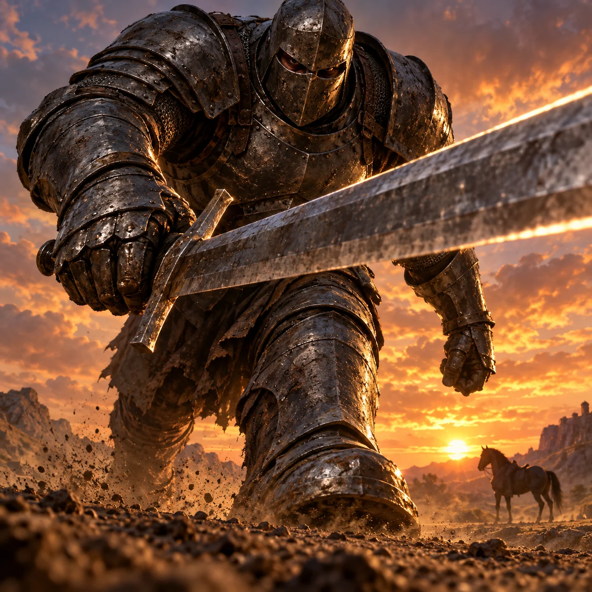
Armoured giant pressing a sword attack in heroic duel.
Aura: Giant size c01 and invincible dragon-blood armour c07/c08 establish danger.
Audit ciri dan sumber
- [object Object]
- [object Object]
- [object Object]
Native and 200px viewed. All seven Sangar checks yes: huge armoured giant dominates; sword thrust/advance reads at 200px; horse makes giant size legible. One head/two eyes/two arms/two legs, plain sword and armour c01/c04/c07. Physical dust only, no outward magic. No text/glyphs/franchise borrowing, gore or nudity.
Review sumberONE original square premium painterly cinematic Mitoloka illustration of Ecke, the giant opponent of Dietrich von Bern who carried Eckesachs.
ANATOMY: one human-form giant, one head, two eyes, two arms, two legs; fully covered by opaque metal armour hardened in dragon blood; one large plain sword Eckesachs; no horns [ecke-c01, ecke-c07, ecke-c08]
MOMENT: drive forward into a sword stroke toward the viewer, hunched helmeted face glaring above the moving blade
POWER: no documented outward magic; menace through giant size and armour made invincible by dragon-blood hardening, with no glowing blood [ecke-c07, ecke-c08]
SCALE & CAMERA: extreme low angle; giant fills frame, small ordinary horse silhouette behind him as an editorial comparison of giant size
LIGHT & WEATHER: one sunset source, rim light on blade edge, earth dust from his advance
SURFACE: scratched dark iron armour, weathered leather seams, heavy steel sword
SETTING: an unlabelled outdoors heroic duel ground, editorial setting for the fight against Dietrich [ecke-c04, ecke-c06]
MOOD: menacing / awe-inspiring; dangerous and imposing, never cute, calm or decorative.
HARD CONSTRAINTS: no text, lettering, logo, border, frame or watermark; no extra heads, limbs or fingers; no design borrowed from any film, game, anime or comic; no nudity or explicit gore; no generic glow aura, neon outline or energy ribbons; no tattoos, glyphs or pseudo-text.
Laurieddhu
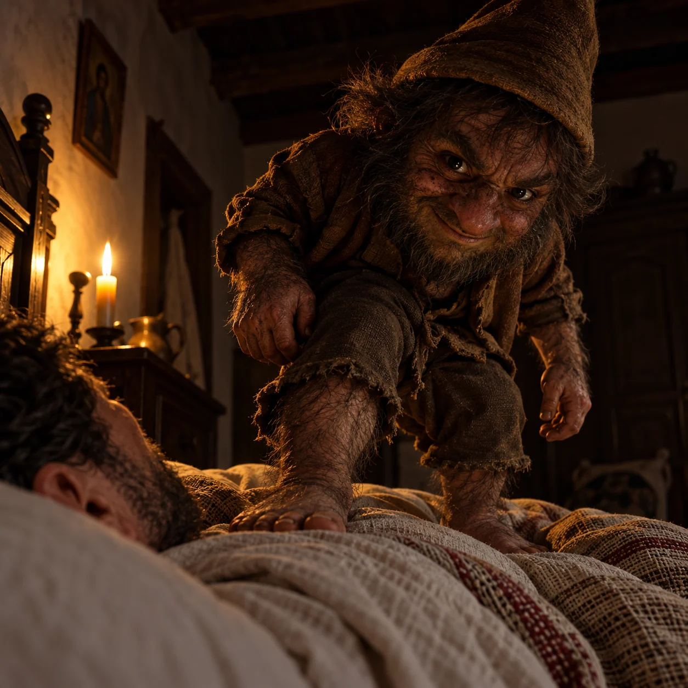
Hairy tobacco-clad child-sized sprite pressing down sleeping chest.
Aura: C04 oppressive weight and c03 ugly hairy face produce eerie dominance through close framing, without giant inflation.
Audit ciri dan sumber
- [object Object]
- [object Object]
- [object Object]
Native and 200px viewed. All seven Sangar checks yes: hairy ugly little man, brown clothes, single pointed cap, two eyes/arms/legs and bare feet c03; weighted step compresses covered sleeping chest c04. Adult head/pillow demonstrate child-sized body without giant inflation. Sly stare and clamber action read at 200px. No text/glyphs, aura, gore, nudity or recognizable franchise design.
Review sumberONE original square premium painterly cinematic Mitoloka illustration of Laurieddhu, the mischievous small hairy household sprite of Salento.
ANATOMY: exactly one ugly hairy little human-shaped man, about the size of a three-year-old child, one head, two glossy black eyes, two arms and two bare-foot legs; tobacco-coloured opaque clothes and exactly one pointed cloth hat, not elf ears [laurieddhu-c03]
MOMENT: clamber onto the covered chest of an adult sleeper, pressing the bedding down with both heavy feet and leaning a sly face toward the viewer
POWER: its documented surprising weight compresses the sleeping adult's chest bedding physically; no beams or magic lights [laurieddhu-c04]
SCALE & CAMERA: extreme low angle; extreme close-up from pillow height; adult body and pillow demonstrate small size, no enlarged giant sprite
LIGHT & WEATHER: one candle source near the bed, warm rim light, deep bedroom shadows
SURFACE: coarse hairy cheeks and hands, rumpled brown cloth, plain hat and woven bedding
SETTING: a dark domestic sleeping room in southern Italy [laurieddhu-c01, laurieddhu-c04]
MOOD: menacing / awe-inspiring; dangerous and imposing, never cute, calm or decorative.
HARD CONSTRAINTS: no text, lettering, logo, border, frame or watermark; no extra heads, limbs or fingers; no design borrowed from any film, game, anime or comic; no nudity or explicit gore; no generic glow aura, neon outline or energy ribbons; no tattoos, glyphs or pseudo-text.
Mâchecroute
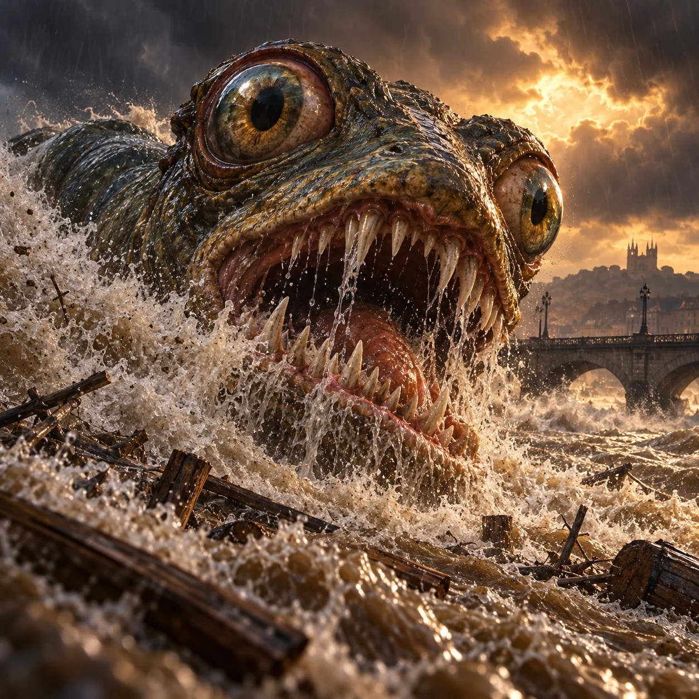
Living flood dragon using documented oversized carnival head and eyes.
Aura: C01 flood and c04 huge horrific jaws make its documented oversized face confrontational.
Audit ciri dan sumber
- [object Object]
- [object Object]
- [object Object]
Native and 200px viewed, all seven Sangar checks yes. Oversized single head and two enormously bulging eyes dominate small partially submerged body; wide horrific toothed jaws c04/c12, living water-dragon c03. Active flood surge and debris c01, Rhône bridge setting c03. No added horns/wings/visible limbs, magic beams, text, glyphs, border, franchise design, gore or nudity.
Review sumberONE original square premium painterly cinematic Mitoloka illustration of Mâchecroute, the Rhône flood dragon at Lyon, visualized alive through its documented carnival anatomy.
ANATOMY: one monstrous dragon-like water animal with one head much larger than the rest of its compact body, exactly two huge bulging eyes each bigger than the small belly, wide horrific jaws crowded with teeth; no invented horns, wings or visible limbs [machecroute-c03, machecroute-c04, machecroute-c12]
MOMENT: burst its enormous head through a breaking Rhône flood wave straight toward the viewer, jaws snapping and water pouring from teeth
POWER: a powerful flood surges around and ahead of the dragon, physically sweeping river debris [machecroute-c01]
SCALE & CAMERA: extreme low angle; head and eyes fill most of square; compact body glimpsed behind head, no human giant-scale claim
LIGHT & WEATHER: one amber break in storm cloud, rim light, dark rain and river spray
SURFACE: living wet pebbled skin, rough teeth and river sediment; no wooden puppet surface
SETTING: the Rhône near Lyon's Guillotière bridge, a dim bridge silhouette behind flood [machecroute-c01, machecroute-c03]
MOOD: menacing / awe-inspiring; dangerous and imposing, never cute, calm or decorative.
HARD CONSTRAINTS: no text, lettering, logo, border, frame or watermark; no extra heads, limbs or fingers; no design borrowed from any film, game, anime or comic; no nudity or explicit gore; no generic glow aura, neon outline or energy ribbons; no tattoos, glyphs or pseudo-text.
Serpent de Manlleu
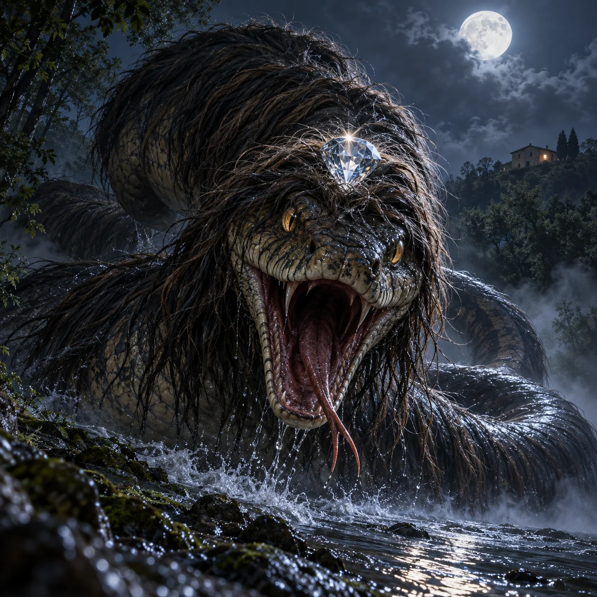
Farmhouse-sized long-haired serpent with single diamond on head.
Aura: C06 huge serpent and c03 hair/diamond dominate the frame without invented powers.
Audit ciri dan sumber
- [object Object]
- [object Object]
Native and 200px inspected, seven Sangar checks yes. One continuous limbless serpent, single head/two eyes, long abundant hair and one clear diamond on crown c03/c06; house comparator reflects c06 farmhouse scale. Active lunge through river spray, no magical effect, crown diamond reflects moonlight. Woods/river c03. No text/glyphs, horns/wings/legs, franchise appearance, nudity or gore.
Review sumberONE original square premium painterly cinematic Mitoloka illustration of Serpent de Manlleu, the farmhouse-sized hairy serpent of the Devesa woods.
ANATOMY: one giant limbless serpent, one head, two eyes, one continuous coiled body and one tail, abundant long shaggy hair, exactly one large shining clear diamond resting on its crown; no horns, wings or legs [serpent-de-manlleu-c03, serpent-de-manlleu-c06]
MOMENT: rear from a dense coil over the riverbank and lunge its hairy crowned head toward the viewer
POWER: no documented outward magic; menace through documented huge hairy anatomy and the diamond reflecting real light [serpent-de-manlleu-c03, serpent-de-manlleu-c06]
SCALE & CAMERA: extreme low angle; farmhouse-sized serpent fills square; tiny farmhouse silhouette beyond woods establishes documented scale
LIGHT & WEATHER: one moon source, rim light on shaggy hair and natural diamond reflection, damp woodland mist
SURFACE: wet dark long hair draping over coarse serpent skin, clear faceted uninscribed diamond
SETTING: Devesa woods near Manlleu beside the river where it drinks [serpent-de-manlleu-c03]
MOOD: menacing / awe-inspiring; dangerous and imposing, never cute, calm or decorative.
HARD CONSTRAINTS: no text, lettering, logo, border, frame or watermark; no extra heads, limbs or fingers; no design borrowed from any film, game, anime or comic; no nudity or explicit gore; no generic glow aura, neon outline or energy ribbons; no tattoos, glyphs or pseudo-text.
玄鱼
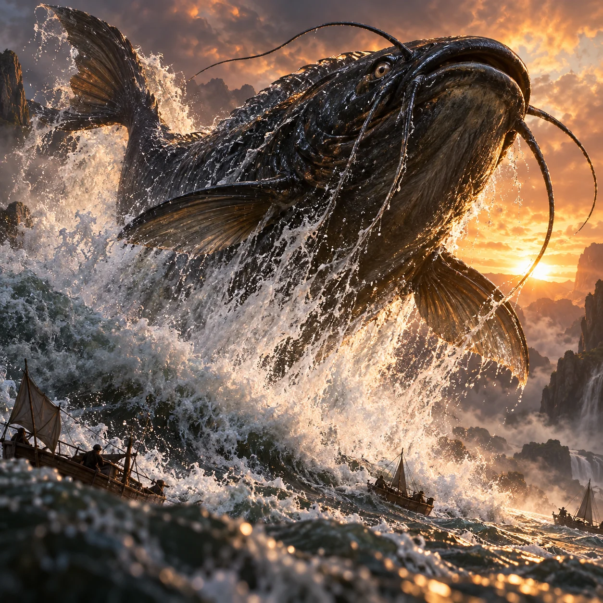
Thousand-chi black whiskered fish leaping from Yu abyss.
Aura: C08 startling leap and c10 immense size render river spirit c05 awe-inspiring.
Audit ciri dan sumber
- [object Object]
- [object Object]
- [object Object]
Native and 200px reviewed, all seven Sangar checks yes. Huge black scaled fish with long whiskers, one head/two eyes, paired fish fins and single fish tail; no legs/horns/wings. c07 blackfish, c10 thousandchi variant scale with tiny boats; c08 startling physical leap. Active spray, no inferred flood magic. No text/glyphs, franchise likeness, gore or nudity.
Review sumberONE original square premium painterly cinematic Mitoloka illustration of Xuanyu, Gun transformed into the enormous black river-spirit fish.
ANATOMY: one black whiskered scaled fish, one head, two eyes, a fish body with normal paired fins and one fish tail, no legs, horns, wings or extra heads [wd-q10411096-c04, wd-q10411096-c07, wd-q10411096-c10]
MOMENT: leap from the Yu abyss toward the viewer, whiskers sweeping water and scales breaking the wave crest
POWER: its physical leap sends immense river waves and water spray outward; no beams or magical water-control claim [wd-q10411096-c07, wd-q10411096-c08]
SCALE & CAMERA: extreme low angle; thousand-chi-long fish dominates square, tiny river boats used as editorial size comparison, low near-water camera
LIGHT & WEATHER: one warm sunset break, rim light on spray and black scales, dark river mist
SURFACE: wet black overlapping fish scales, long soft whiskers, heavy river foam
SETTING: Yu abyss connected to rivers and sea [wd-q10411096-c03, wd-q10411096-c08]
MOOD: menacing / awe-inspiring; dangerous and imposing, never cute, calm or decorative.
HARD CONSTRAINTS: no text, lettering, logo, border, frame or watermark; no extra heads, limbs or fingers; no design borrowed from any film, game, anime or comic; no nudity or explicit gore; no generic glow aura, neon outline or energy ribbons; no tattoos, glyphs or pseudo-text.
駮
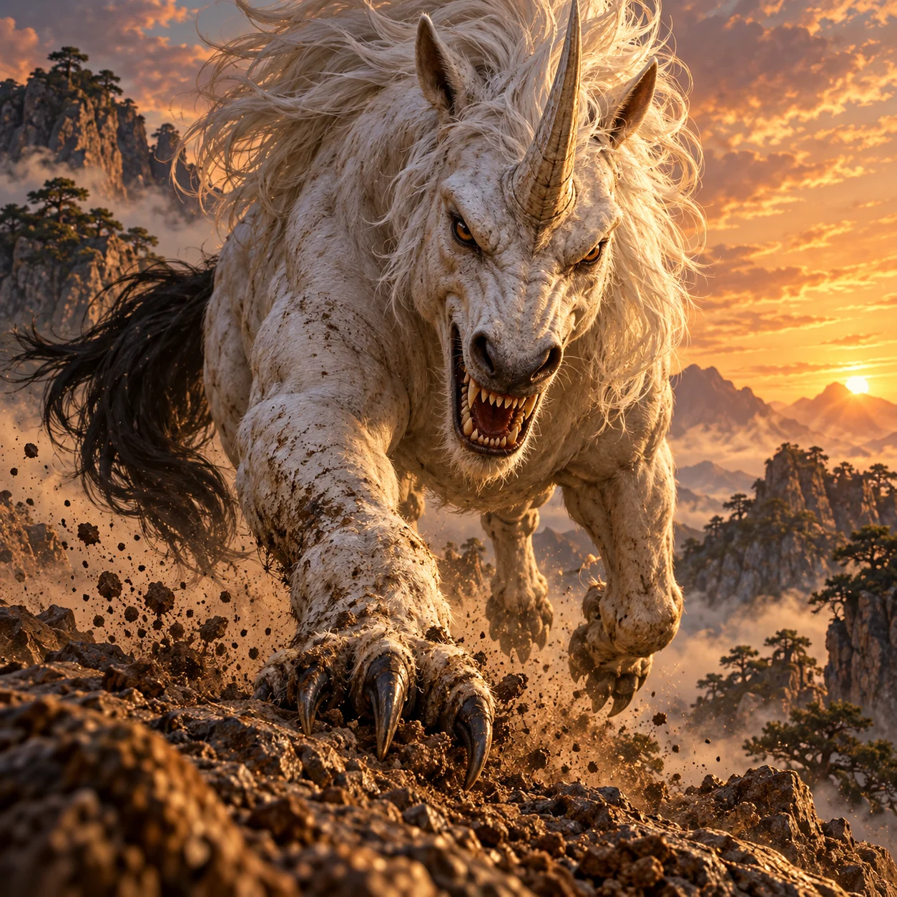
One-horned white horse predator charging on clawed feet.
Aura: C03 sawteeth/claws and c05 tiger predation establish menace without invented thunder effects.
Audit ciri dan sumber
- [object Object]
- [object Object]
- [object Object]
Native and 200px inspected, all seven Sangar checks yes. White horse-like predator with one horn, one black tail, serrated sharp teeth and clawed feet replacing hooves c02/c03/c07. One head/two eyes, four-leg quadruped body with far rear partly occluded during stride, no added limbs or wings. Active frontal earth-raking charge; no lightning from voice c04/c10 and no magic beams. No text/glyphs, franchise appearance, gore or nudity.
Review sumberONE original square premium painterly cinematic Mitoloka illustration of Bo, the white horse-like predator of tigers and leopards.
ANATOMY: one white horse-like beast, one head, two eyes, one single forehead horn, exactly four legs ending in sharp clawed feet instead of hooves, saw-like teeth, one black tail; no wings [wd-q10566576-c02, wd-q10566576-c03, wd-q10566576-c07]
MOMENT: charge toward the viewer with saw teeth bared, one clawed forefoot raking mountain earth
POWER: no outward magical effect; predatory menace and physical dirt scattering from claws, no lightning from its drum-like thunderous voice [wd-q10566576-c04, wd-q10566576-c05, wd-q10566576-c10]
SCALE & CAMERA: extreme low angle; close foreshortened framing, no invented giant size or scale comparison
LIGHT & WEATHER: one warm dusk source, rim light on white hair and horn, earth dust
SURFACE: dirty coarse white horse hair, dark tail hair, hard horn, serrated teeth and clawed toes
SETTING: Mount Zhongqu mountain ground [wd-q10566576-c06]
MOOD: menacing / awe-inspiring; dangerous and imposing, never cute, calm or decorative.
HARD CONSTRAINTS: no text, lettering, logo, border, frame or watermark; no extra heads, limbs or fingers; no design borrowed from any film, game, anime or comic; no nudity or explicit gore; no generic glow aura, neon outline or energy ribbons; no tattoos, glyphs or pseudo-text.
甲斐の黒駒
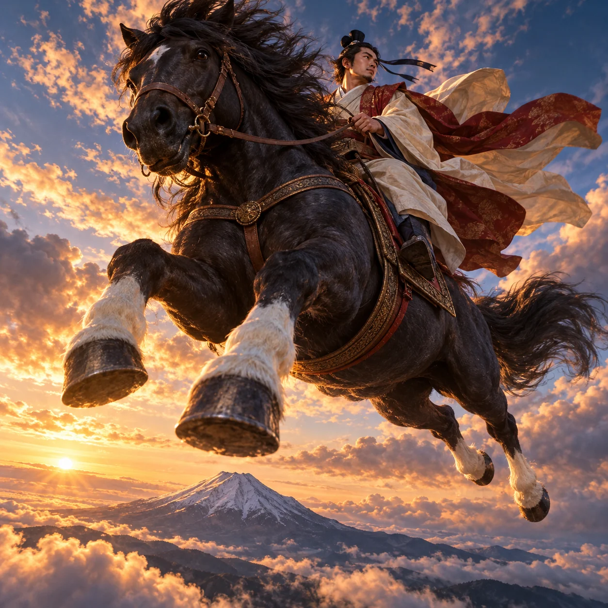
Wingless white-legged sacred horse carrying Shōtoku over Fuji.
Aura: C02 sacred status and c01/c08 flight over Fuji convey reverent awe through action.
Audit ciri dan sumber
- [object Object]
- [object Object]
- [object Object]
Native and 200px inspected, seven Sangar checks yes. Sacred wingless horse in unsupported flight c01/c08 above Fuji c07/c08, four white lower legs/hooves c02, one head/two natural eyes/two ears/tail, one fully clothed Shōtoku. Active forward flight reads at 200px, respectful grandeur without evil expression. Cloth/harness ornament is floral/nonliteral, no text or glyph inscription. No invented wings/horns, magic trails, franchise likeness, gore or nudity.
Review sumberONE original square premium painterly cinematic Mitoloka illustration of Kai no Kurokoma, the sacred flying horse ridden by Prince Shōtoku across Mount Fuji.
ANATOMY: one horse with one head, two eyes, four white lower legs, four hooves, one mane and one tail, no wings, horns or extra limbs; dark charcoal coat is editorial, not a sourced colour; one respectfully depicted prince fully clothed in plain opaque layered robes seated on its back [wd-q11577838-c01, wd-q11577838-c02, wd-q11577838-c07]
MOMENT: fly toward and above the viewer over Mount Fuji, forelegs thrust forward and white lower legs visible, prince leaning with the flight
POWER: unsupported flight through open air, without wings, beams or energy trails [wd-q11577838-c01, wd-q11577838-c08]
SCALE & CAMERA: extreme low angle; horse dominates frame in close foreshortening, distant Fuji below proves flight; normal horse scale
LIGHT & WEATHER: one low warm sunrise source, rim light on horse and cloud, wind-blown mane and robes
SURFACE: coarse dark horse hair, white lower legs, woven opaque robe layers
SETTING: air over Mount Fuji on the sacred legendary journey from Nara [wd-q11577838-c07, wd-q11577838-c08]
MOOD: menacing / awe-inspiring; dangerous and imposing, never cute, calm or decorative.
HARD CONSTRAINTS: no text, lettering, logo, border, frame or watermark; no extra heads, limbs or fingers; no design borrowed from any film, game, anime or comic; no nudity or explicit gore; no generic glow aura, neon outline or energy ribbons; no tattoos, glyphs or pseudo-text.
神社姫
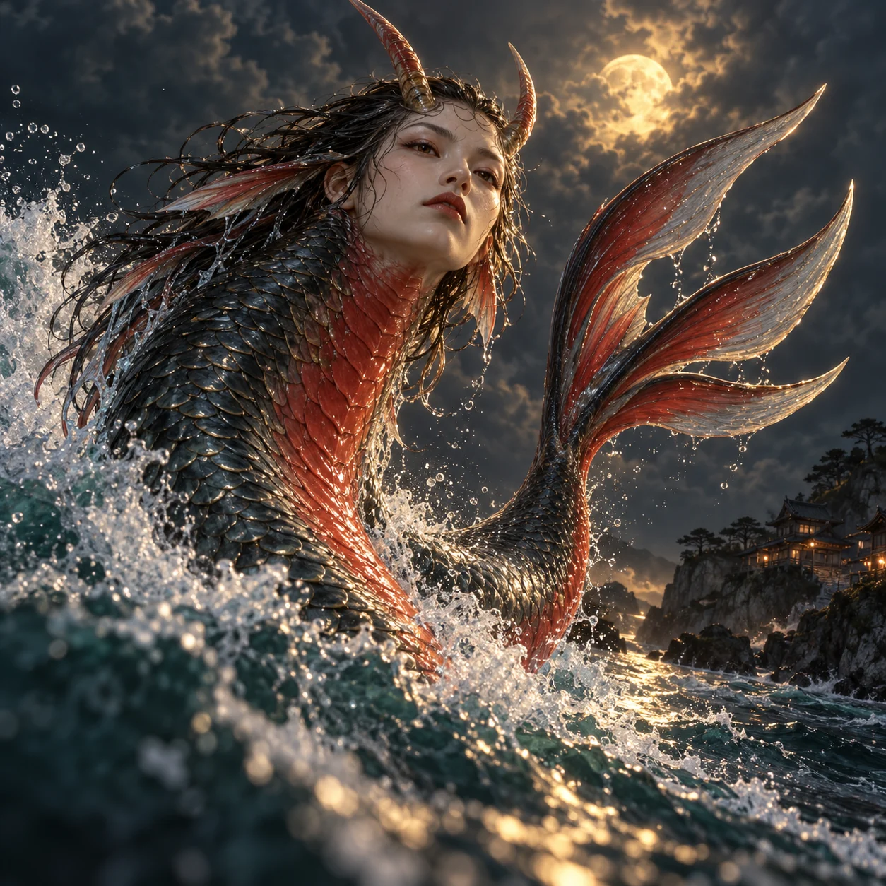
Two-horned human-faced long fish with red belly and three-branched tail.
Aura: C03 protective Dragon-Palace messenger and c02/c05 strange anatomy inspire awe.
Audit ciri dan sumber
- [object Object]
- [object Object]
- [object Object]
Native and 200px inspected, all seven Sangar checks yes. One long fish with human face, exactly two horns, two eyes, red scaled belly and one tail fin with three separately legible sword-like branches c02/c05. No human arms/legs, opaque scaled body. Rising wave moment, reverent protective presence c03; no emitted healing magic, only physical spray. No text/glyphs, invented giant comparator, franchise likeness, gore or nudity.
Review sumberONE original square premium painterly cinematic Mitoloka illustration of Jinjahime, the protective prophecy-bearing fish messenger of the Dragon Palace.
ANATOMY: one long fish body with one human face, exactly two horns on that head, two human eyes, one red belly, no human arms or legs; exactly one tail fin divided into three distinct sword-like branches, fully opaque fish scales over body [wd-q11590702-c02, wd-q11590702-c05]
MOMENT: rise through a curling coastal wave toward the viewer, human face solemn and commanding, long red-bellied body bent so the three-branched tail appears beside its head
POWER: no visible documented attack or emitted healing magic; water spray comes only from bodily emergence, protective prophecy shown as solemn presence [wd-q11590702-c03]
SCALE & CAMERA: extreme low angle; tight framing of long fish body, both horns and three tail branches conspicuous; no invented giant scale
LIGHT & WEATHER: one low warm moonlit cloud break, rim light on fish and salt spray, dark coast
SURFACE: wet overlapping fish scales, red ventral scales, human face without nudity
SETTING: Hizen Japanese coast associated with the epidemic prophecy [wd-q11590702-c01]
MOOD: menacing / awe-inspiring; dangerous and imposing, never cute, calm or decorative.
HARD CONSTRAINTS: no text, lettering, logo, border, frame or watermark; no extra heads, limbs or fingers; no design borrowed from any film, game, anime or comic; no nudity or explicit gore; no generic glow aura, neon outline or energy ribbons; no tattoos, glyphs or pseudo-text.
當扈
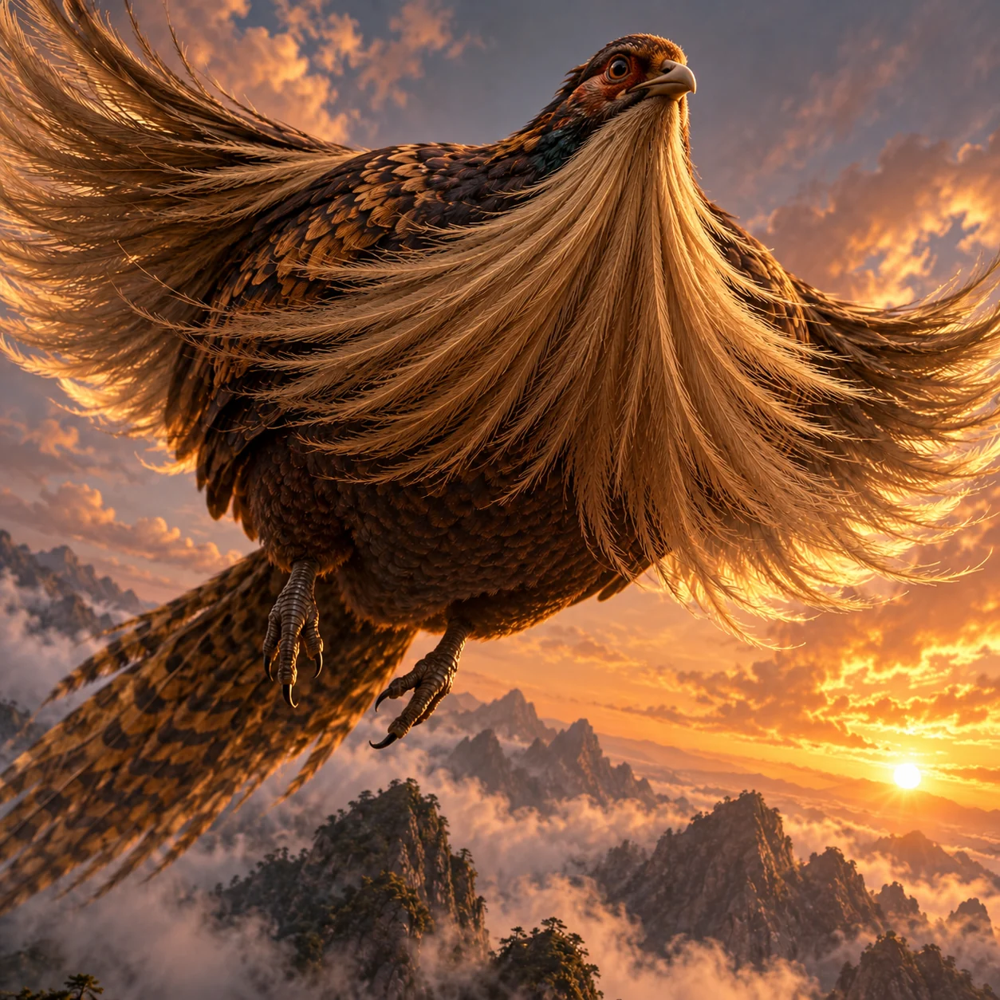
A pheasant-shaped Danghu with small gamebird head and short bill, folded wings, and a huge throat-beard carrying it through the sky.
Aura: Impossible beard-borne flight c03/c06/c07, close framing and Mount Shangshen c02; no invented elemental effect.
Audit ciri dan sumber
- [object Object]
- [object Object]
- [object Object]
Root memeriksa native1254 dan200px. Kepala kecil bulat serta paruh pendek-tebal burung pegar mengganti kepala/paruh elang; dua sayap berbulu terlipat di sisi tubuh, tepat dua kaki dan satu ekor panjang berbelang. Janggut panjang tumbuh di bawah tenggorokan dan menyebar sebagai satu-satunya alat terbang c03/c06/c07, Gunung Shangshen c02. Gerak dan bentuk ganjil dominan tanpa efek baru atau tulisan. Tujuh uji sangar lulus.
Review sumberEdit the supplied Danghu illustration to correct ONLY the pheasant anatomy. Keep its square cinematic painterly composition, close low camera, mountain sunset, long flowing throat-beard as the sole flight mechanism, warm dark colors, two feet, one body, long barred pheasant tail, and all feather textures. Replace the eagle head and hooked raptor beak with the clearly SMALL rounded head of a pheasant and a SHORT stout gamebird bill, tapered gently and completely WITHOUT a hooked raptor tip; retain two natural eyes, a small modest gamebird face, no eagle brow or hooked upper mandible. Make the two normal feathered wings visibly FOLDED FLAT along the left and right sides of the pheasant body; only the huge fibrous throat-beard spreads outward to provide lift. The beard must visibly grow from beneath the throat, not from the wings. Source anatomy wd-q17065939-c01/c06, beard flight c03/c06/c07, Mount Shangshen c02. Preserve one head, two eyes, two wings, two feet, one long barred tail. No new magic, no aura, no extra anatomy, no lettering, signature, pseudo-writing, border, watermark, nudity or gore. Original mythological creature, no film/game/anime design.
Anka (Arabian bird)
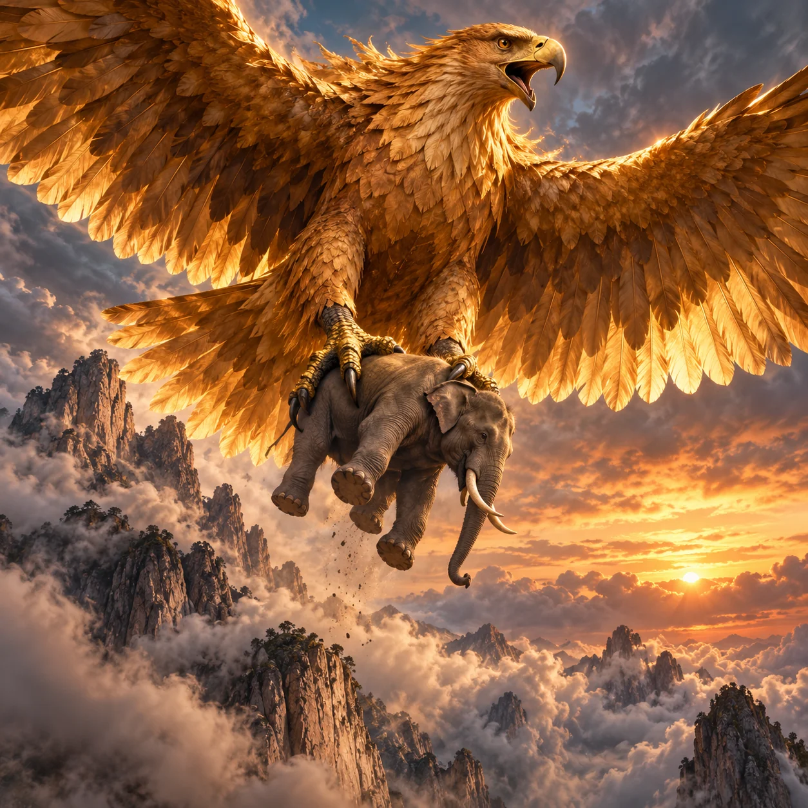
Golden giant Anka lifting a whole elephant above Mount Qaf.
Aura: C01 five-elephant wingspan and c04 effortless elephant lifting establish overwhelming scale.
Audit ciri dan sumber
- [object Object]
- [object Object]
- [object Object]
Native and 200px inspected, seven Sangar checks yes. One huge golden bird c01/c06, one head/two eyes/beak/two wings/two bird legs/tail; wings broad enough for five-elephant comparison, carries one intact elephant c04 with four legs/trunk. Active swoop over editorial Mount Qaf c08, golden feathers reflect dusk rather than flames. Awe and immense power read at 200px. No fire/rebirth, text/glyphs, franchise appearance, gore or nudity.
Review sumberONE original square premium painterly cinematic Mitoloka illustration of Anka, the enormous golden Arabian bird and king of birds.
ANATOMY: one colossal golden bird, one head, two eyes, one beak, exactly two broad feather wings, two powerful bird legs with talons, one feather tail; holds one intact small elephant securely in its talons without injury [anka-q2649344-c01, anka-q2649344-c04, anka-q2649344-c06]
MOMENT: swoop from the mountain into the viewer's sky with wings spread wide, lifting the elephant as easily as a cat carries a mouse
POWER: physical enormous-bird flight carrying an elephant; no phoenix fire or rebirth effect in this selected giant-bird variant [anka-q2649344-c04]
SCALE & CAMERA: extreme low angle; wingspan equals five elephants side by side, elephant in talons supplies documented comparison; giant bird dominates entire square
LIGHT & WEATHER: one warm dusk source, rim light through golden feathers, turbulent mountain cloud
SURFACE: layered rough golden feathers, heavy talon texture, dusty elephant skin
SETTING: air at the legendary Mount Qaf where the bird lives alone [anka-q2649344-c08]
MOOD: menacing / awe-inspiring; dangerous and imposing, never cute, calm or decorative.
HARD CONSTRAINTS: no text, lettering, logo, border, frame or watermark; no extra heads, limbs or fingers; no design borrowed from any film, game, anime or comic; no nudity or explicit gore; no generic glow aura, neon outline or energy ribbons; no tattoos, glyphs or pseudo-text.
Vampire of Croglin Grange
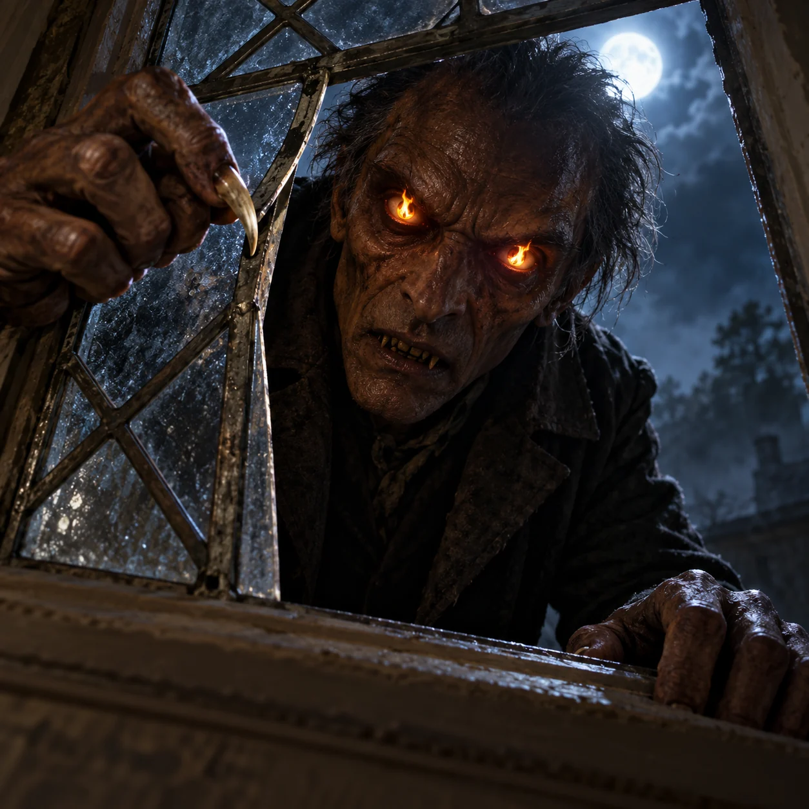
Brown-faced flaming-eyed vampire peeling bedroom window lead.
Aura: C05 nail-driven intrusion and c06 flaming eyes confront viewer without invented anatomy.
Audit ciri dan sumber
- [object Object]
- [object Object]
- [object Object]
Native and 200px inspected, all seven Sangar checks yes. Single brown human face with two actual flaming eyes c06, two normal human hands, one long index fingernail actively stripping window lead c05; opaque editorial coat. Tight human-size intrusion avoids ordinary-man reading, nail and eye flames legible at 200px. No extra limbs/horns/wings, text/glyphs/watermark/franchise likeness, magic beams, gore or nudity.
Review sumberONE original square premium painterly cinematic Mitoloka illustration of Vampire of Croglin Grange, the brown-faced flaming-eyed vampire of the Cumberland window tale.
ANATOMY: one human-shaped undead creature, one brown face, exactly two flaming eyes, two arms and two legs, one long fingernail picking window lead; body fully covered in plain opaque weathered dark coat and trousers, no bat wings or horns [croglin-grange-c05, croglin-grange-c06]
MOMENT: peel the lead strip from a bedroom window pane with its long nail, lean its brown face through the opening directly toward the viewer
POWER: two eyes contain real visible small flames, exactly as the tale describes; no eye beams or energy ribbons [croglin-grange-c06]
SCALE & CAMERA: extreme low angle; tight close face-and-hands framing at human size, view from inside the bedroom
LIGHT & WEATHER: one moonlight source outside window, rim light on nail and glass, flaming eyes local accent, night haze
SURFACE: weathered brown face, dirty long nail, dull lead strips, opaque rough cloth
SETTING: window of the old single-storey house in Cumberland [croglin-grange-c05, croglin-grange-c10]
MOOD: menacing / awe-inspiring; dangerous and imposing, never cute, calm or decorative.
HARD CONSTRAINTS: no text, lettering, logo, border, frame or watermark; no extra heads, limbs or fingers; no design borrowed from any film, game, anime or comic; no nudity or explicit gore; no generic glow aura, neon outline or energy ribbons; no tattoos, glyphs or pseudo-text.
Einheer
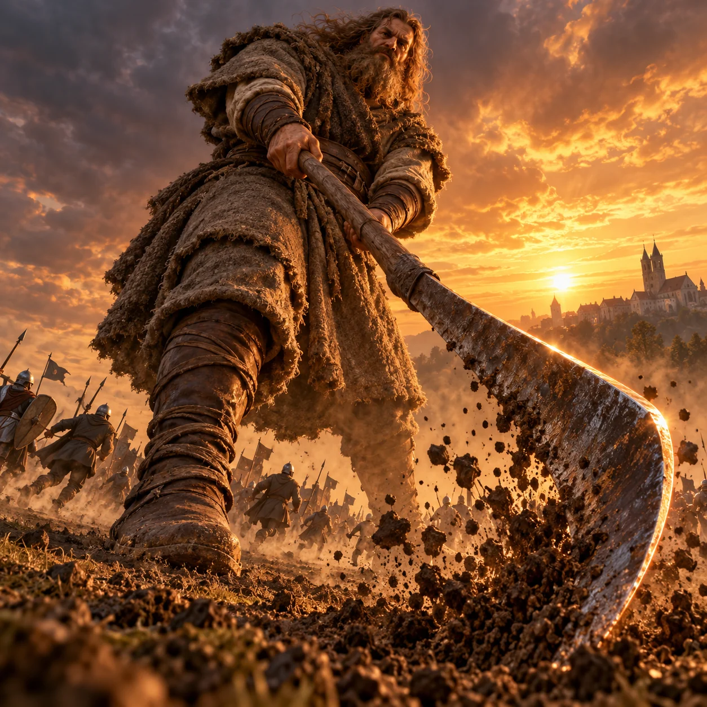
Huge fully clothed warrior swinging a scythe before fleeing warriors.
Aura: C05 scythe combat and c06 army-like stature make physical danger explicit.
Audit ciri dan sumber
- [object Object]
- [object Object]
- [object Object]
Native and 200px reviewed, all seven Sangar checks yes. Human-form warrior giant c01/c03, one head/two eyes/two arms/two legs in opaque rough clothes, single scythe c05 striking earth and scattering soil, retreating tiny warriors c06 establish giant size. Strong downward action and scale read at 200px, no ordinary-man pose. No injury/gore, magic, text/glyphs, horns/extra limbs, franchise appearance or nudity.
Review sumberONE original square premium painterly cinematic Mitoloka illustration of Einheer, the Swabian warrior giant of Zwickau.
ANATOMY: one human-form giant, one head, two eyes, two arms and two legs; fully clothed in plain opaque coarse wool layers and leather boots, holds one long heavy scythe, no horns [einheer-c01, einheer-c03, einheer-c05]
MOMENT: swing his scythe down toward the viewer during battle, blade striking earth and throwing soil as tiny distant warriors flee
POWER: documented army-like giant strength conveyed by scythe stroke and retreating warriors, without wounded bodies or outward magic [einheer-c05, einheer-c06]
SCALE & CAMERA: extreme low angle; towering giant fills frame, ordinary distant warrior silhouettes below establish giant size
LIGHT & WEATHER: one amber sunset source, rim light on scythe and wool, battle dust
SURFACE: coarse wool, heavy worn leather, rough scythe iron and churned earth
SETTING: legendary battle ground near Zwickau, exact terrain editorial [einheer-c01, einheer-c07]
MOOD: menacing / awe-inspiring; dangerous and imposing, never cute, calm or decorative.
HARD CONSTRAINTS: no text, lettering, logo, border, frame or watermark; no extra heads, limbs or fingers; no design borrowed from any film, game, anime or comic; no nudity or explicit gore; no generic glow aura, neon outline or energy ribbons; no tattoos, glyphs or pseudo-text.
Hippanthrope
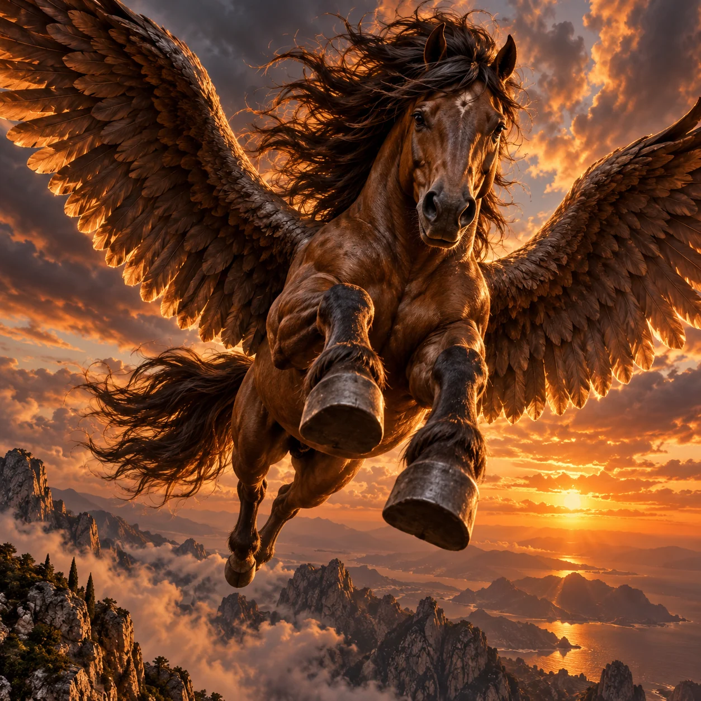
Melanippe variant as a complete winged horse in flight.
Aura: C07 winged transformed horse confronts through active flight and close framing.
Audit ciri dan sumber
- [object Object]
- [object Object]
- [object Object]
Native and 200px inspected, seven Sangar checks yes. Complete horse form with two conspicuous feather wings c07 selected Melanippe variant c06; one head/two eyes/four legs ending in hooves/tail, rear legs overlap naturally in flight, no human intermediates. Active wheeling flight with foreshortened forehooves and dominating wings reads awe at 200px, normal unspecified horse size. No transformation glow, text/glyphs, horns, franchise borrowing, gore or nudity.
Review sumberONE original square premium painterly cinematic Mitoloka illustration of Hippanthrope, Melanippe transformed into a winged horse in one Greek myth variant.
ANATOMY: one complete horse with one head, two eyes, four horse legs ending in hooves, exactly two feathered wings attached at shoulders, one mane and one tail; no human face or limbs; deep bronze coat editorial, not source colour [hippanthrope-c01, hippanthrope-c06, hippanthrope-c07]
MOMENT: wheel in the sky directly toward the viewer, both wings sweeping air and forehooves thrust forward
POWER: the complete transformed winged horse form of Melanippe is shown in wing-driven flight; no partial transformation, glow or magic trails [hippanthrope-c07]
SCALE & CAMERA: extreme low angle; close foreshortening at normal horse size, both wings legible and land distant below
LIGHT & WEATHER: one dark warm sunset source, rim light on feather edges, wind-tossed mane and cloud
SURFACE: coarse horse hair, layered rough feathers, dark bronze and walnut tones
SETTING: editorial unlabelled Greek myth mountain sky, no precise source locale asserted [hippanthrope-c06, hippanthrope-c07]
MOOD: menacing / awe-inspiring; dangerous and imposing, never cute, calm or decorative.
HARD CONSTRAINTS: no text, lettering, logo, border, frame or watermark; no extra heads, limbs or fingers; no design borrowed from any film, game, anime or comic; no nudity or explicit gore; no generic glow aura, neon outline or energy ribbons; no tattoos, glyphs or pseudo-text.
Kajiga Baba
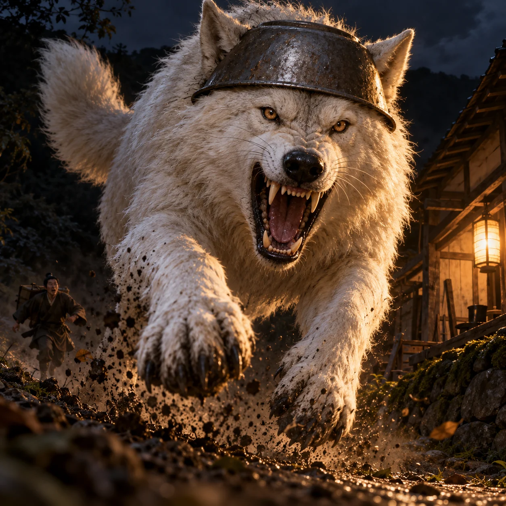
Huge white wolf with iron bowl bounding into courier attack.
Aura: C04 huge white wolf and c06 attack make threat active, bowl unmistakable.
Audit ciri dan sumber
- [object Object]
- [object Object]
- [object Object]
Native and 200px inspected, seven Sangar checks yes. Huge white wolf c04/c06, one wolf head/two eyes/two ears/four-leg quadruped body and one bushy tail, two active forepaws prominent and rear naturally behind body, exactly one plain inverted iron bowl. Snarling attack toward viewer and courier c06, bowl readable at 200px. Physical dirt only, no generic dark-magic effect. No text/glyphs, extra hats/limbs/horns, franchise likeness, gore or nudity.
Review sumberONE original square premium painterly cinematic Mitoloka illustration of Kajiga Baba, the huge white wolf wearing an iron bowl in the Muroto tale.
ANATOMY: one enormous white-furred wolf, one wolf head, two eyes, four wolf legs, one bushy wolf tail, exactly one plain inverted iron bowl fitted on its head between normal wolf ears; no extra hats or horns [kajiga-baba-c04, kajiga-baba-c06]
MOMENT: bound out of darkness straight toward the viewer, jaws open and forepaws descending in the attack described against a courier
POWER: no emitted magic; physical huge-wolf attack, dirt and leaves displaced by paws [kajiga-baba-c06]
SCALE & CAMERA: extreme low angle; huge wolf fills frame, a small courier silhouette behind its flank suggests documented relative size
LIGHT & WEATHER: one warm lantern source, rim light on white fur and bowl, dark drifting dust
SURFACE: matted white wolf fur, dull rough plain iron bowl, damp earth
SETTING: Sakihama area of Muroto, Kōchi, roadside near blacksmith's house rendered editorially [kajiga-baba-c05, kajiga-baba-c06]
MOOD: menacing / awe-inspiring; dangerous and imposing, never cute, calm or decorative.
HARD CONSTRAINTS: no text, lettering, logo, border, frame or watermark; no extra heads, limbs or fingers; no design borrowed from any film, game, anime or comic; no nudity or explicit gore; no generic glow aura, neon outline or energy ribbons; no tattoos, glyphs or pseudo-text.
Khaan-Khereti
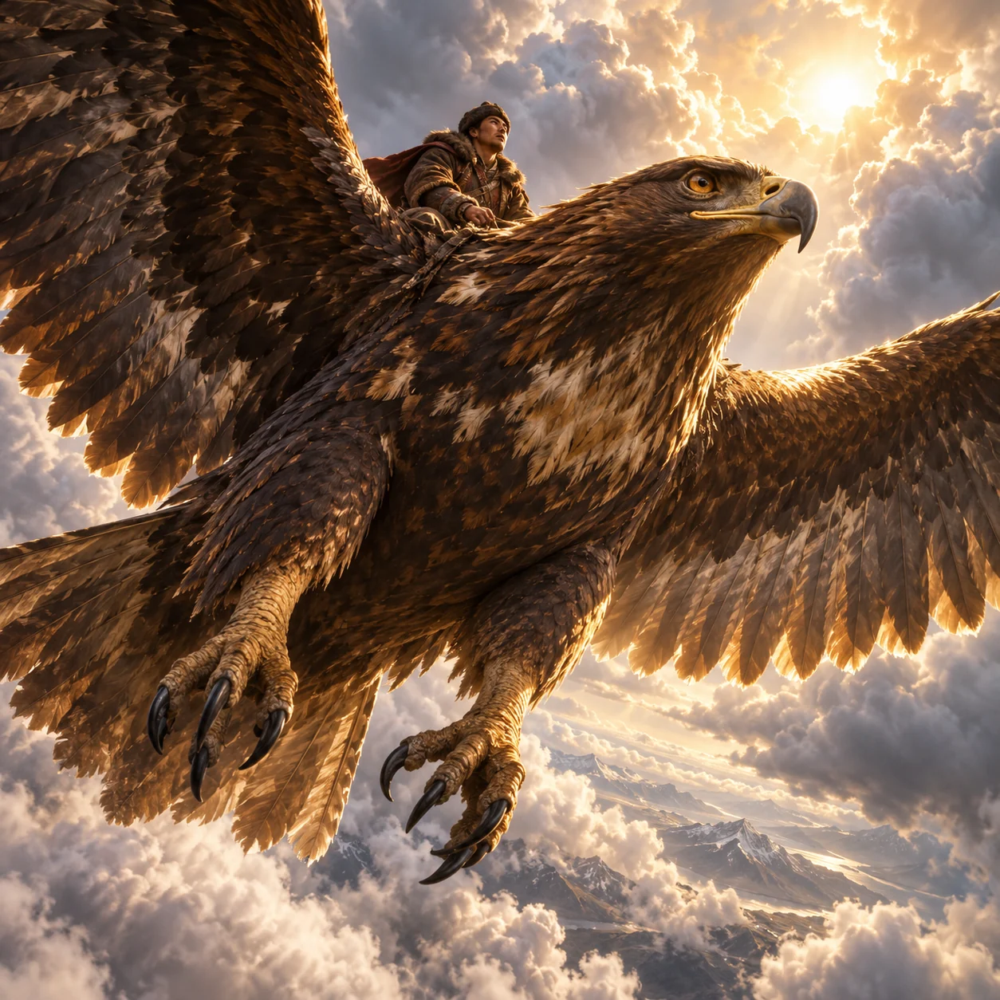
Noble giant hawk queen lifting a hero to the Upper World.
Aura: C01 giant scale and c05 hero ascent with noble c03 character provide reverent grandeur.
Audit ciri dan sumber
- [object Object]
- [object Object]
- [object Object]
Native and 200px inspected, seven Sangar checks yes. Giant hawk-form queen c01/c04, single avian head/two eyes/beak/two wings/two legs/tail, no human face c02. One fully clothed small hero riding broad back c05 makes giant scale evident. Wing-driven ascent toward Upper World c01/c05, focused noble helper c03, no evil or phoenix flames. No magic beams/text/glyphs, franchise borrowing, gore or nudity.
Review sumberONE original square premium painterly cinematic Mitoloka illustration of Khaan-Khereti, the noble Tuvan giant queen of birds carrying a hero to the Upper World.
ANATOMY: one giant hawk-shaped bird with one avian head and beak, two eyes, two broad feathered wings, two bird legs and one feather tail; no human face, no fire; one small fully clothed hero sitting securely on its broad back [khaan-khereti-c01, khaan-khereti-c02, khaan-khereti-c04, khaan-khereti-c05]
MOMENT: lift upward past the viewer with broad wings driving air and the hero gripping its back, avian face focused and noble
POWER: physical flight carries the hero toward the Upper World; no flames, phoenix rebirth or magic rays [khaan-khereti-c01, khaan-khereti-c05]
SCALE & CAMERA: extreme low angle; giant bird fills square, normal human hero on back supplies documented scale
LIGHT & WEATHER: one warm sun break above clouds, rim light through feathers, sweeping cold cloud
SURFACE: coarse dark hawk feathers, worn opaque hero cloth, walnut and antique gold palette
SETTING: ascending air between mortal ground and the Upper World of Tuvan myth, clouds editorial [khaan-khereti-c01, khaan-khereti-c05]
MOOD: menacing / awe-inspiring; dangerous and imposing, never cute, calm or decorative.
HARD CONSTRAINTS: no text, lettering, logo, border, frame or watermark; no extra heads, limbs or fingers; no design borrowed from any film, game, anime or comic; no nudity or explicit gore; no generic glow aura, neon outline or energy ribbons; no tattoos, glyphs or pseudo-text.
La Serena
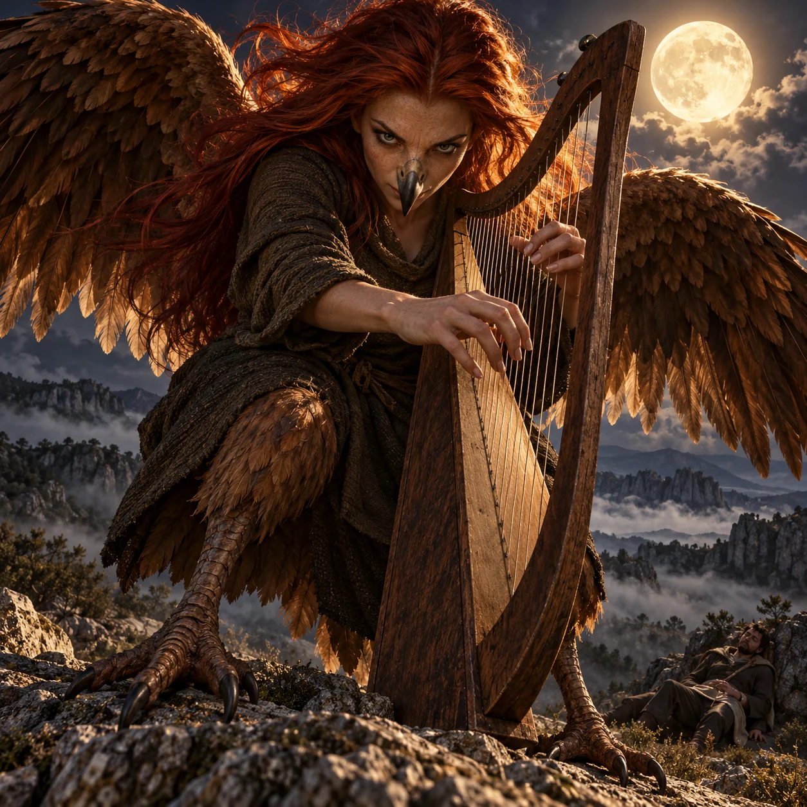
Reddish-haired brown-winged hooked-beak Serena playing a harp.
Aura: C03 fierce bird anatomy and c04/c05 harp-induced sleep create danger through active music.
Audit ciri dan sumber
- [object Object]
- [object Object]
- [object Object]
Native and 200px inspected, all seven Sangar checks yes. One half-woman half-bird c02/c03: one head/two eyes/small hooked beak, long reddish hair, two human arms with normal hands actively plucking one plain harp, exactly two brown feather wings and two taloned bird legs. Opaque editorial torso cloth. Predatory stare and active playing c04 read at 200px; distant fully clothed sleeping man c05/c13. Full moon c04, no emitted sound beams or energy. No text/glyphs/franchise borrowing, gore or nudity.
Review sumberONE original square premium painterly cinematic Mitoloka illustration of La Serena, the fierce half-woman half-bird harp player of Gandesa.
ANATOMY: one half-woman half-bird being, one head with two eyes and one small hooked beak, long reddish hair, two human arms and hands playing one plain harp, exactly two brown feathered wings and two bird legs ending in talons; torso fully covered by opaque plain dark woven cloth [la-serena-c02, la-serena-c03, la-serena-c04]
MOMENT: lean toward the viewer while forcefully plucking the harp, brown wings sweeping outward and talons gripping rocky ground, intense predatory stare
POWER: the harp lures a distant fully clothed man who sinks into sleep; no visible sound ribbons, beams or magic particles [la-serena-c04, la-serena-c05, la-serena-c13]
SCALE & CAMERA: extreme low angle; close framing of hooked-beak face, harp-playing hands and wing bases; normal unspecified size, sleeping man far behind
LIGHT & WEATHER: one full moon source, warm silver-gold rim light through reddish hair, mountain mist
SURFACE: rough brown feathers, reddish windblown hair, opaque woven cloth and uninscribed aged wood harp
SETTING: Pàndols and Cavalls ranges by Gandesa on a full-moon night [la-serena-c01, la-serena-c04]
MOOD: menacing / awe-inspiring; dangerous and imposing, never cute, calm or decorative.
HARD CONSTRAINTS: no text, lettering, logo, border, frame or watermark; no extra heads, limbs or fingers; no design borrowed from any film, game, anime or comic; no nudity or explicit gore; no generic glow aura, neon outline or energy ribbons; no tattoos, glyphs or pseudo-text.
Loberno
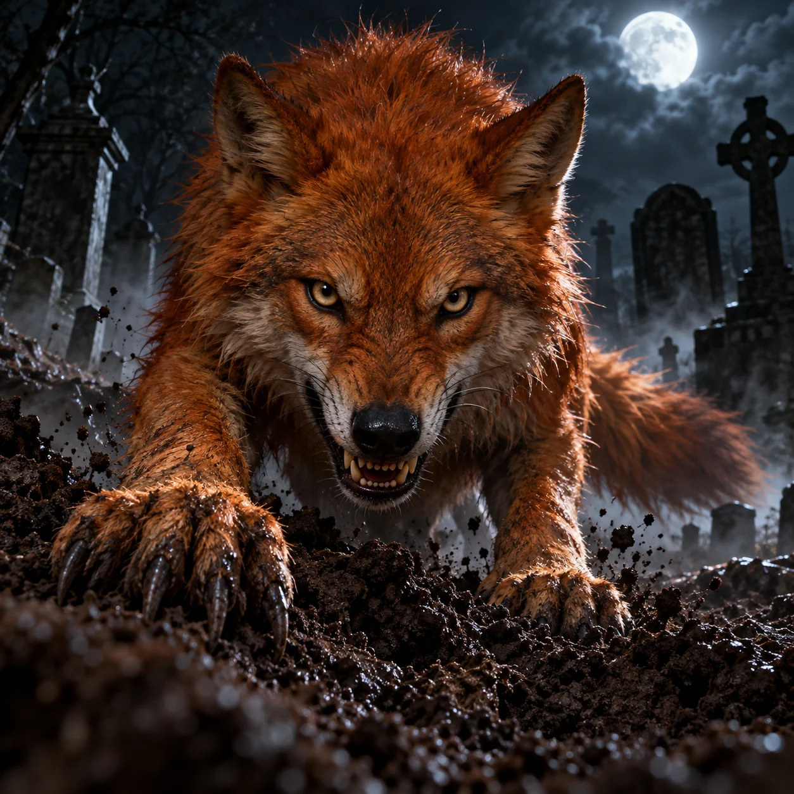
Orange wolf-like variant with intense fixed gaze digging in a cemetery.
Aura: Fixed gaze and grave-digging menace from loberno-c04.
Audit ciri dan sumber
- [object Object]
- [object Object]
- [object Object]
Native 1254x1254 and 200px viewed. Seven Sangar checks pass: orange wolf-vixen dominates, fixed gaze remains dangerous at thumbnail, claws actively dig cemetery soil; no supernatural beams, soil action from c04; one head, two eyes, canine limb structure with hindquarters occluded, one tail; no text or franchise design; not a calm ordinary animal. Moon/mist editorial.
Review sumberONE original square premium painterly cinematic Mitoloka illustration of Loberno, the Galician offspring of a wolf and a vixen that prowls cemeteries.
ANATOMY: one orange wolf-like head with two fixed eyes, one canine body, four canine legs, one bushy tail, fox-like rusty orange fur; no horns or extra parts [loberno-c01, loberno-c02]
MOMENT: Crawl toward the viewer from an opened patch of cemetery earth, front claws gripping soil, lips lifted and gaze locked directly into the viewer.
POWER: its documented fascinating paralysing gaze is conveyed by the unnaturally intent fixed eyes and confrontation only, without beams or glow; disturbed earth shows its cemetery digging [loberno-c04]
SCALE & CAMERA: extreme low angle; tight framing at natural canine scale, foreshortened front paws and head occupy most of the square; no giant scale.
LIGHT & WEATHER: one cold moon source, rim light along orange fur, low ground mist and flying earth as editorial atmosphere.
SURFACE: matted orange fur, damp black nose, gritty claws and wet soil.
SETTING: shadowed Galician cemetery with unlettered stones barely visible behind the dominant creature [loberno-c04, loberno-c05]
MOOD: menacing; dangerous and imposing, never cute, calm or decorative.
HARD CONSTRAINTS: no text, lettering, logo, border, frame or watermark; no extra heads, limbs or fingers; no design borrowed from any film, game, anime or comic; no nudity or explicit gore; no generic glow aura, neon outline or energy ribbons; no visible corpses, no blood, no inscriptions.
Orphan Bird
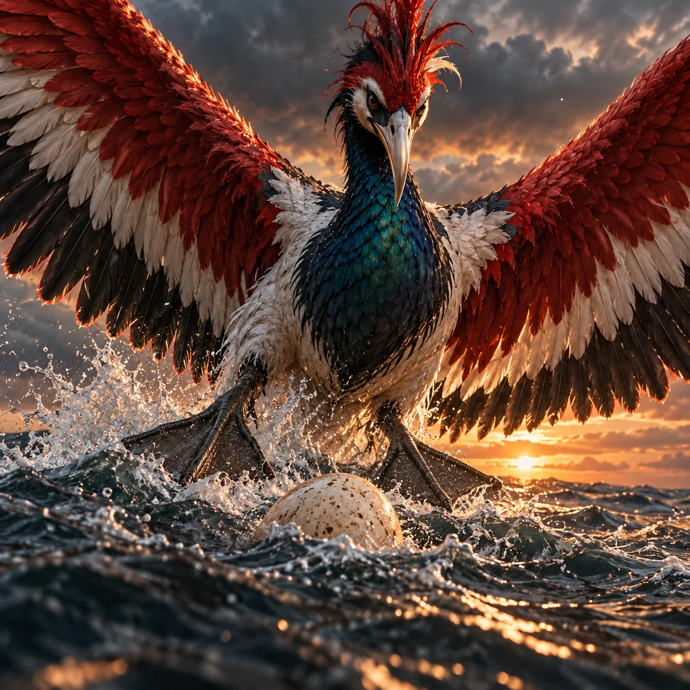
Crested hybrid bird rises above a buoyant egg.
Aura: Dominant hybrid anatomy c02/c06 and egg protection c03/c07 create awe.
Audit ciri dan sumber
- [object Object]
- [object Object]
- [object Object]
Native1254 and200 viewed after targeted edit02. Seven Sangar checks pass: dominant protective hybrid wing action retains awe at200; one floating egg c03 and physical splash no invented effect; one crested head/two eyes/one eagle-like curved beak/peacock neck/chest/crane torso/two red-black-white wings/two black SWAN PADDLE feet now both show continuous broad triangular web membranes between forward toes. No text/franchise; not ordinary bird. Root01 foot rejection archived; native01 remains unchanged.
Review sumberONE original square premium painterly cinematic Mitoloka illustration of Orphan Bird, the medieval bestiary bird that lays its eggs in the Indian sea called la mer darenoise.
ANATOMY: one crested head, two eyes, one thick clearly hooked eagle beak with a short sharply curved tip, a peacock neck and chest, a crane body, two wings distinctly red white and black, two broad black swan paddle feet, each with three forward toes connected along their full lengths by continuous broad black web membranes; natural avian proportions; no extra beaks or limbs [orphan-bird-c02, orphan-bird-c06]
MOMENT: Rise forcefully from the sea directly toward the viewer, lift both broad wings over a single floating egg and drive two webbed feet through the water.
POWER: its good eggs float in the sea and the chicks rise beneath the mother's wings; show one buoyant unbroken egg and physically splashing water, without magical rays [orphan-bird-c03, orphan-bird-c07]
SCALE & CAMERA: extreme low angle at water level; close framing of the bird at natural crane scale, wings occupy nearly the whole frame; no giant scale.
LIGHT & WEATHER: one sunset source cutting under heavy cloud, rim light across red wings, sea spray and wind as editorial atmosphere.
SURFACE: wet layered feathers, coarse scaled webbed feet, ivory eagle beak, rippled water.
SETTING: the sea la mer darenoise in India; dark open water fills the foreground beneath the dominant bird [orphan-bird-c01]
MOOD: awe-inspiring; dangerous and imposing, never cute, calm or decorative; protective rather than evil.
HARD CONSTRAINTS: no text, lettering, logo, border, frame or watermark; no extra heads, limbs or fingers; no design borrowed from any film, game, anime or comic; no nudity or explicit gore; no generic glow aura, neon outline or energy ribbons; no humanoid face, no crown, no symbols; BOTH feet must show unmistakable continuous webbing, never separated raptor talons.
EDIT INSTRUCTION: Correct only both feet into unmistakable broad black webbed swan paddles with visible triangular membranes connecting all three forward toes, and slightly sharpen the eagle beak hook. Preserve the existing crest, peacock neck/chest, crane body, exactly two red-black-white wings, floating egg, square composition, natural scale, protective action, warm light and all other details. No new anatomy.
Petitcrieu
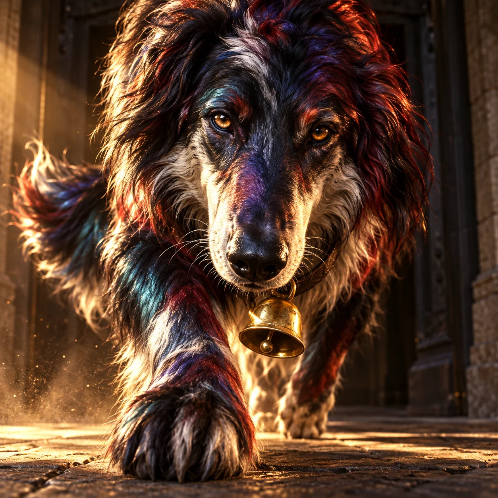
Angle-changing fairy dog bounds forward with the golden collar bell ringing.
Aura: Angle-changing colours c06/c09 and documented bell c03 convey intense magical beauty.
Audit ciri dan sumber
- [object Object]
- [object Object]
- [object Object]
Native1254 and200 viewed. Seven checks pass: large adult level-muzzle dog and single plain golden bell dominate, intense multicolour reflective fur and low advancing posture retain imposing magical beauty at200 without making benevolent animal evil; forward paw/body movement and swinging bell; sound represented physically only c03, angle colours c06/c09; one head/two eyes/four canine limbs compatible with occluded hindbody/one tail; no text/glyphs/franchise; no puppy tilt or calm ornament. Attempt1 archived as ordinary cute collie.
Review sumberONE original square premium painterly cinematic Mitoloka illustration of Petitcrieu, the many-coloured magical fairy dog from Avalon in Tristan and Iseult.
ANATOMY: exactly one adult, long-muzzled beautiful canine head, two canine eyes, one dog body, four legs and one tail; the whole textured coat has impossible angle-dependent flowing colour, deep black and white shift through rich red, petrol blue and violet as real reflective fur optics; avoid a simple two-colour split face or any recognizable ordinary dog breed; a plain collar with one prominent golden bell [petitcrieu-c02, petitcrieu-c03, petitcrieu-c06, petitcrieu-c09]
MOMENT: Surge straight toward the viewer with a level long muzzle lowered almost to camera and an unwavering intense adult gaze; powerful shoulders drive forward while fur shifts from black-white to red as it turns; the golden bell swings beneath the jaw, no head tilt or puppy expression.
POWER: the swinging golden bell's sound gives happiness to those hearing it; show the physical swinging bell and its open rim, no sound waves, no light beams, no magical sparkles [petitcrieu-c03]
SCALE & CAMERA: extreme low angle; close foreshortened natural dog scale, canine face and bell fill most of the square, foreground paw reaches toward viewer; no giant scale.
LIGHT & WEATHER: one narrow warm sunset shaft across the jaw, face mainly in dramatic shadow, strong rim light with deep shadow and airborne ordinary dust as editorial atmosphere.
SURFACE: silky but individually textured multicoloured fur, worn leather collar, polished plain gold bell without decoration.
SETTING: shadowed Welsh residence interior referring to its ownership by Duke Gilan of Wales, only a dark plain doorway behind it [petitcrieu-c02]
MOOD: awe-inspiring; imposing magical beauty and intense life, never cute, calm or decorative; benevolent rather than evil.
HARD CONSTRAINTS: no text, lettering, logo, border, frame or watermark; no extra heads, limbs or fingers; no design borrowed from any film, game, anime or comic; no nudity or explicit gore; no generic glow aura, neon outline or energy ribbons; no horns, wings, elf ears, symbols, glyphs or extra bells; no cartoon puppy, no head tilt, no collie, no cute expression; the beautiful fairy dog must seem unearthly and imposing while staying benevolent.
Syrbotae
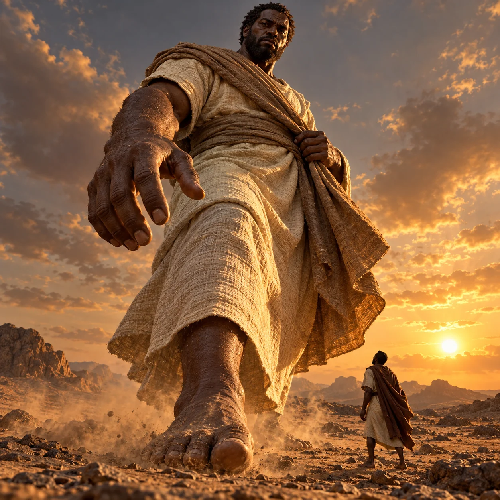
One twelve-foot Syrbotae giant strides forward.
Aura: Documented twelve-foot stature c03/c05 and powerful folk c06 convey imposing presence.
Audit ciri dan sumber
- [object Object]
- [object Object]
Native1254 and200 viewed. All seven checks pass: human giant dominates square, clear step/advancing hand and small distant adult convey sourced12foot stature at thumbnail, powerful but dignified face; no magic effects, ordinary footfall dust editorial; one human head/two eyes/two arms/two legs consistent, opaque robes; no text/franchise/symbols; not an ordinary passerby at human scale.
Review sumberONE original square premium painterly cinematic Mitoloka illustration of Syrbotae, a medieval bestiary African race of giant men said to stand twelve feet tall.
ANATOMY: one adult giant man with one human head, two eyes, two arms and two legs, exactly twelve feet tall, powerful human build; fully opaque unmarked woven robe covering torso and legs, plain cloth shoulder wrap; no horns, tattoos or nonhuman anatomy [syrbotae-c01, syrbotae-c03, syrbotae-c05, syrbotae-c06]
MOMENT: Stride down toward the viewer, one great hand reaches forcefully through dusty foreground and the other draws the cloak aside; stern confrontational gaze, feet lifting dust.
POWER: no documented power; menace through anatomy, scale and light only; great strength is conveyed by the documented powerful giant body rather than magic [syrbotae-c06]
SCALE & CAMERA: extreme low angle; the twelve-foot giant dominates from close foreground hand to head; one distant adult human at half his height gives literal size comparison, no mountain-sized inflation.
LIGHT & WEATHER: one low setting sun, antique gold rim light, deep walnut shadows, ordinary wind-blown dust as editorial weather.
SURFACE: coarse woven cloth, weathered skin, bare dusty feet, rough dry earth.
SETTING: African country near the Aethiopian kingdom of Meroe, an unbuilt rocky plain as editorial landscape treatment [syrbotae-c04, syrbotae-c05]
MOOD: awe-inspiring; dangerous and imposing, never cute, calm or decorative; respectful human dignity.
HARD CONSTRAINTS: no text, lettering, logo, border, frame or watermark; no extra heads, limbs or fingers; no design borrowed from any film, game, anime or comic; no nudity or explicit gore; no generic glow aura, neon outline or energy ribbons; no stereotyped tribal adornment, no tattoos, weapons or symbols.
破镜兽
Menunggu gambar yang lolos audit
虛耗
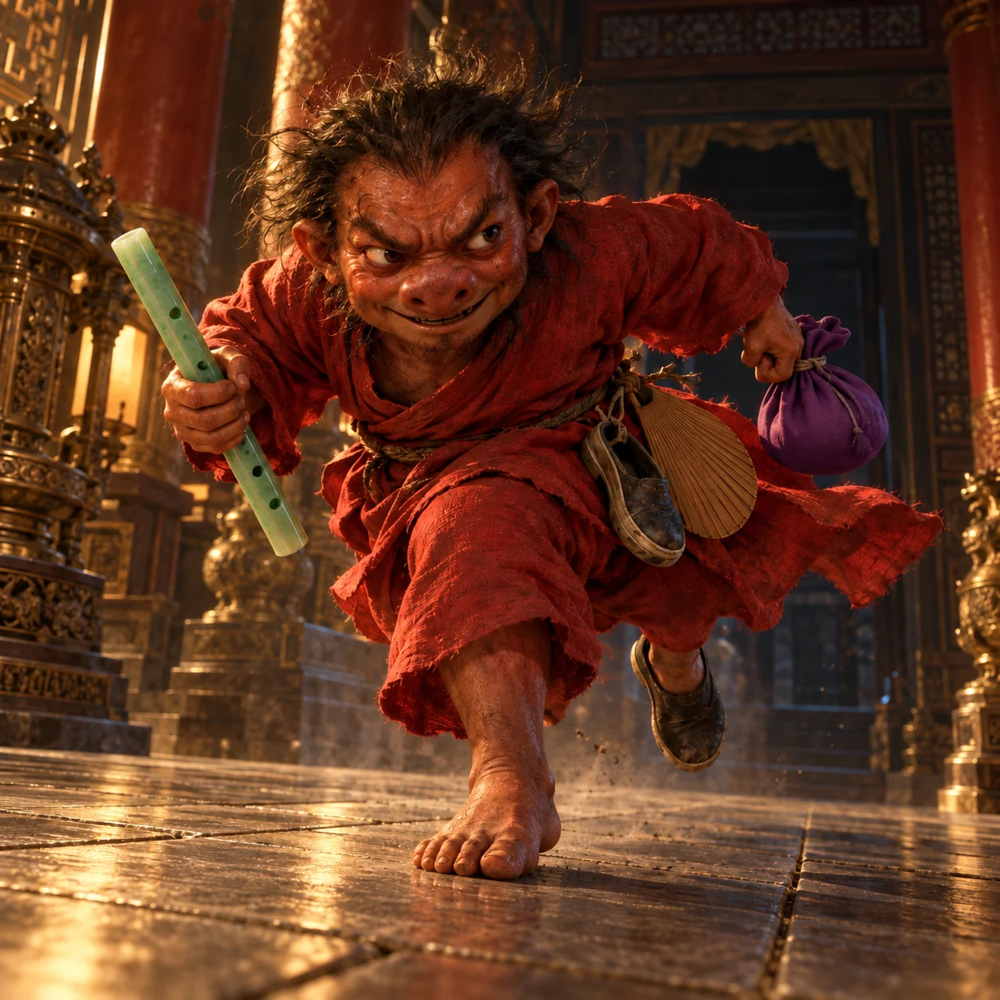
Small ox-nosed red-robed Xuhao runs with stolen flute and pouch.
Aura: Theft c05/c07/c08 and ox nose/single waist shoe c02 create uncanny menace.
Audit ciri dan sumber
- [object Object]
- [object Object]
- [object Object]
Native1254 and200 viewed after edit02. Seven Sangar checks pass: small broad ox-nosed demon dominant/intense at200 and visibly running; physical flute/pouch theft c05/c07 no beams; one head/two eyes/two arms/two legs, normal rounded ears, precisely one bare foreground foot/one shod rear foot/one hanging waist shoe/one waist bamboo fan; red opaque clothing, plain pouch no glyphs; no text/franchise; uncanny demon rather than ordinary person.01 archived for invented pointed ears/patterned pouch.
Review sumberONE original square premium painterly cinematic Mitoloka illustration of Xuhao, the small Chinese demon that steals possessions and turns household joys into trouble.
ANATOMY: exactly one small humanoid demon with one head, two eyes, a conspicuous broad ox's nose but no horns, two ordinary short rounded human ears, never pointed, two arms and two legs; opaque red robe and opaque red trousers; one bare foot, one shoe on the other foot, exactly one additional shoe hanging at the waist beside a bamboo fan [wd-q10514345-c02, wd-q10514345-c03, wd-q10514345-c07]
MOMENT: Dart toward the viewer across the palace hall, twist into a low sneaking run with a malicious grin, hold a stolen plain green jade flute in one hand and a closed cloth scent pouch in the other; robe and waist shoe swing sharply.
POWER: physically steals the emperor's jade flute and Yang Guifei's scented pouch, turning household joy to sorrow without magical energy effects [wd-q10514345-c05, wd-q10514345-c07, wd-q10514345-c08]
SCALE & CAMERA: extreme low angle at the small demon's foot level; tight full-body framing so both feet, single hanging shoe and waist fan can be counted, natural small stature contrasted with normal palace tile joints; never inflate him.
LIGHT & WEATHER: one warm oil-lamp light from off frame, sharp rim light across nose and red robe, deep walnut shadows, ordinary trailing dust as editorial atmosphere.
SURFACE: coarse red fabric, weathered bare skin, old shoe leather, plain bamboo slats, smooth undecorated jade, plain cloth pouch.
SETTING: Emperor Minghuang's dream palace hall with unlettered floor tiles and dark doorway behind [wd-q10514345-c07]
MOOD: menacing; dangerous and imposing through uncanny close presence, never cute, calm or decorative.
HARD CONSTRAINTS: no text, lettering, logo, border, frame or watermark; no extra heads, limbs or fingers; no design borrowed from any film, game, anime or comic; no nudity or explicit gore; no generic glow aura, neon outline or energy ribbons; no horns or tattoos, no runes or embroidery glyphs, no third foot, only one waist shoe and one worn shoe; do not depict Zhong Kui; no pointed ears, elf ears, goblin ears or pouch decoration.
EDIT INSTRUCTION: Correct ONLY the two ears to short normal rounded human ears and the scented pouch to plain undecorated purple cloth with absolutely no patterns, symbols, embroidery or text. Preserve broad ox nose, intense face, red opaque clothing, stolen jade flute, exactly one bare foot, one shoe on the other foot, one single additional shoe and one bamboo fan at waist, and all composition/light. No new anatomy.
錢塘龍王
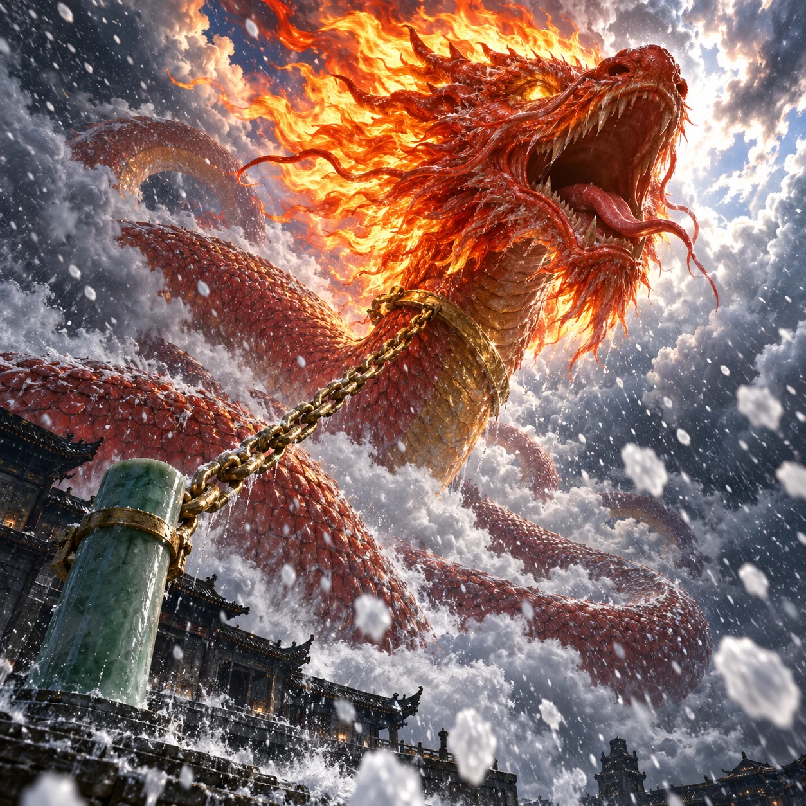
Thousand-chi red chained dragon rises amid snow/hail with fiery mane.
Aura: Thousand-chi red scales, golden captivity chain and fiery mane amid snow/hail c07 create divine awe.
Audit ciri dan sumber
- [object Object]
- [object Object]
- [object Object]
Native1254 and200 viewed. Seven checks pass: gigantic red dragon head and continuous coils dominate/awe at200, upward flight actively strains gold chain to clear jade pillar, fiery mane/snow/hail/torn sky sourced c07 and no external lightning beams, one head with two-eye anatomy compatible with profile occlusion and one red tongue/continuous body, red scales and fiery mane/no wings/visible limbs, no text/glyphs/franchise, not ordinary animal. Source1000chi scale and Dongting captivity c06/c07. Red scaly ridge texture along mane is editorial scale detail, not an imported horned dragon design.
Review sumberONE original square premium painterly cinematic Mitoloka illustration of Qiantang Dragon King, the Chinese Qiantang water deity appearing as the giant red dragon of Liu Yi Zhuan.
ANATOMY: exactly one dragon head and one immense continuous coiling serpentine body over a thousand chi long, vermilion scales, two lightning-bright eyes confined within the eye sockets, a blood-red tongue and a mane of actual flame; one golden chain binds the neck and connects to one plain jade pillar; limb areas are outside the close frame, no invented wings or extra heads [wd-q10564121-c07]
MOMENT: Lift the enormous chained head toward the viewer and climb into the sky in an explosive flight, stretch the gold chain taut to the jade pillar while the fiery mane streams backward.
POWER: snow and hail fall around the dragon as it splits the sky and flies; show physical white hailstones, snow, torn cloud banks and flame on the documented mane; no lightning bolts from the sky or eyes, no beam attacks [wd-q10564121-c07]
SCALE & CAMERA: extreme low angle; colossal documented length expressed by huge coiling body receding behind the close dominant head and a dwarfed jade pillar in the lower corner; no added people.
LIGHT & WEATHER: the actual fiery mane is the single dominant warm light, antique gold rim light on red scales, deep storm shadows, source snow and hail.
SURFACE: rough wet vermilion scales, heavy worn golden chain links, smooth plain green jade pillar without carving, red tongue, real flame wisps.
SETTING: chained at the Dongting palace with a plain jade pillar under the opening storm sky; minimal dark palace structure [wd-q10564121-c06, wd-q10564121-c07]
MOOD: awe-inspiring; dangerous and imposing, never cute, calm or decorative; respectful divinity with explosive power.
HARD CONSTRAINTS: no text, lettering, logo, border, frame or watermark; no extra heads, limbs or fingers; no design borrowed from any film, game, anime or comic; no nudity or explicit gore; no generic glow aura, neon outline or energy ribbons; no invented horns, wings, glyphs, tattoos or symbols; no blood or victims; eyes contain light only and never emit external lightning beams.
枳首蛇
Menunggu gambar yang lolos audit
ケンムン
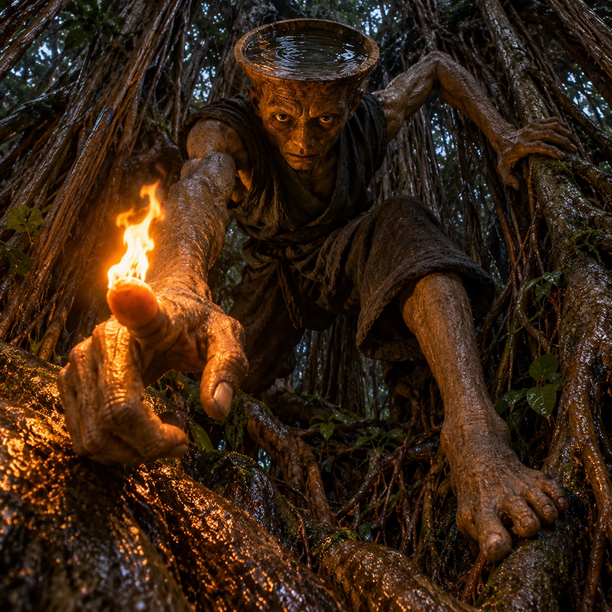
Long-limbed water-dish Kenmun climbs banyan roots with fingertip flame.
Aura: Longlimbs/waterdish c05 and realfingertipflame c08 give uncanny awe.
Audit ciri dan sumber
- [object Object]
- [object Object]
- [object Object]
Native1254 and200 viewed. All seven Sangar checks pass: dominant long-limbed water-dish spirit with intent gaze remains uncanny/imposing at200, climbing roots and reaching flame fingertip create action; localized fingertip firec08 illuminates physical bark not generic aura; one head/two eyes/water-filled headdish/two long arms/two long legs, forward hand one index fire plus thumb/three curled digits and far grip compatible normal five digits, no beak/shell/horns; opaque clothes; no text/franchise; not ordinary person with normal proportions. Banyan settingc04/c07.
Review sumberONE original square premium painterly cinematic Mitoloka illustration of Kenmun, the Amami Islands yōkai of water and banyan trees with long limbs and a water-holding head dish.
ANATOMY: one humanoid yōkai head with two ordinary eyes, a broad round shallow dish-shaped hollow built into the top of its head visibly holding water, two exceptionally long arms and two exceptionally long legs; five fingers on each hand, rough brown skin; fully opaque plain dark cloth tunic and trousers; no horns, beak, shell or pointed ears [wd-q11301322-c05]
MOMENT: Clamber from beneath banyan roots toward the viewer, stretch one long arm forward with a small real flame burning on its index fingertip while the other long hand grips a root; direct intent gaze beneath the water dish.
POWER: generates fire from its fingertip; show one localized physical flame at the index tip casting real warm light onto wet bark and skin, no rays or general aura [wd-q11301322-c08]
SCALE & CAMERA: extreme low angle; tight full-body foreshortening, long arms/legs folded through frame with water dish unobscured; no claim of giant size, no miniature people or giant trees.
LIGHT & WEATHER: the single fingertip flame is the dominant source, narrow warm rim light, damp air and deep walnut shadow as editorial atmosphere.
SURFACE: rough damp skin, coarse plain opaque fabric, gnarled wet banyan roots, water ripples within the shallow head dish.
SETTING: banyan roots on the Amami Islands, the tree spirit's documented habitat [wd-q11301322-c04, wd-q11301322-c07]
MOOD: awe-inspiring and uncanny; dangerous and imposing, never cute, calm or decorative; respectful folklore spirit.
HARD CONSTRAINTS: no text, lettering, logo, border, frame or watermark; no extra heads, limbs or fingers; no design borrowed from any film, game, anime or comic; no nudity or explicit gore; no generic glow aura, neon outline or energy ribbons; no invented kappa beak or shell, no tattoos, glyphs, symbols, elf ears, extra bowls or fireballs; water dish must be part of head, not a hat.
コサメ小女郎
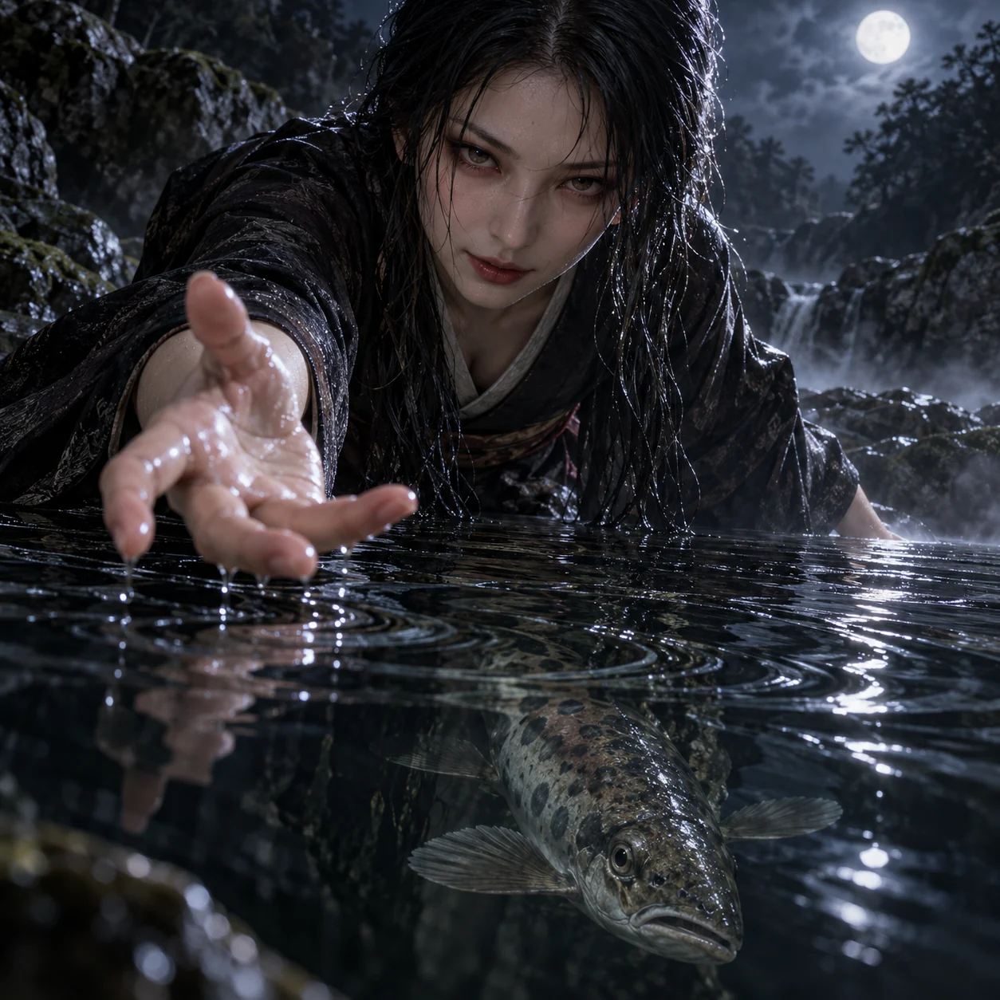
Beautiful human lure above old-fish reflection at Oegaura pool.
Aura: Predatory lure and sourced oldfish/woman transformationc02/c07/c08 visualized by fishreflection create uncanny threat.
Audit ciri dan sumber
- [object Object]
- [object Object]
- [object Object]
Native1254 and200 viewed. Seven checks pass: predatory beautiful woman with reaching lure hand dominates, intense beckoning action and clearly readable oldfish below retain uncanny threat at200; sourcefish-to-woman transformationc02/c07/c08 visualized as editorial fish-shaped reflection rather than hybridbody or new literal reflectionpower; one humanhead/twoeyes/twoarms normalhand/legs outside frame, opaquecloth and one complete fishform below; no invented fins/scales on woman, no beams/gore; no text/franchise. Fish reflection is artistic metaphor, material fish view intentionally depicts her sourced secondform; no independent petfish claim.
Review sumberONE original square premium painterly cinematic Mitoloka illustration of Kosame Kojōrō, the centuries-old fish of Oegaura pool that transforms into a beautiful woman to lure people into water.
ANATOMY: one beautiful adult woman with one human head, two eyes, two arms and two legs, dressed in fully opaque plain dark kimono; no fish parts on her body; in the water below, her reflection is shown as one aged yamame-like fish with one fish head/two eyes/normal paired fins/one tail, an editorial visual metaphor for her sourced second form, not a second creature or hybrid body [wd-q11302031-c02, wd-q11302031-c05, wd-q11302031-c07, wd-q11302031-c08]
MOMENT: Lean over the dark pool toward the viewer and reach one beckoning hand into the immediate foreground, fix the viewer with intensely predatory beautiful eyes; rushing rings of water expose the fish-shaped reflection below her.
POWER: transformation from old fish to beautiful woman and dangerous luring into water is pictured using the fish-shaped reflection as an explicitly artistic visual metaphor; no beams, no glow, no new hybrid anatomy [wd-q11302031-c02, wd-q11302031-c07, wd-q11302031-c08]
SCALE & CAMERA: extreme low angle at water surface; tight natural human-scale half-body framing, face and reaching hand fill upper half and clearly visible old-fish reflection fills lower half, no giant size.
LIGHT & WEATHER: one cold moon sidelight, sharp rim light across wet hair and black water, deep walnut shadows and low ordinary mist as editorial atmosphere.
SURFACE: soaked opaque coarse fabric, wet black hair, weathered fish scales in reflection, dark rippling freshwater.
SETTING: Oegaura pool on the Komatagawa in Ryūjin, Wakayama, dark near-bank water [wd-q11302031-c07, wd-q11302031-c08]
MOOD: menacing; dangerous and imposing through predatory lure and impossible second-form reflection, never cute, calm or decorative.
HARD CONSTRAINTS: no text, lettering, logo, border, frame or watermark; no extra heads, limbs or fingers; no design borrowed from any film, game, anime or comic; no nudity or explicit gore; no generic glow aura, neon outline or energy ribbons; no scales, fins, claws, tattoos, horns or pointed ears on woman's human body; no fishtail woman, no mermaid; no victims or blood; reflection fish is essential and clearly readable.
一目入道
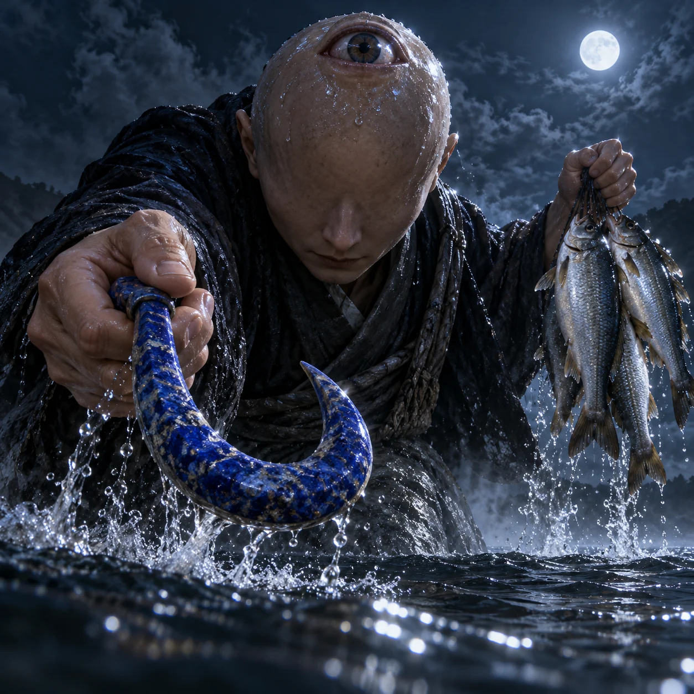
Bowed crown-eye Lake Kamo water god lifts lapis hook and freshfish.
Aura: One crown eye c02 and freshfish on lapis hook c03/c06 convey divine awe.
Audit ciri dan sumber
- [object Object]
- [object Object]
- [object Object]
Native1254 and200 viewed. All seven Sangar checks pass: crown-eye watergod fills frame and retains awe at200, bowed head reveals exactlyone eye on highest crown surface and smooth blank normal-eye face, hookforward/fishlift/watersplash action, physical freshfish/lapishookc03/c06 no energy effects, one head/oneeye/twoarms/body under opaquecloth with normalhands, no text/glyphs/franchise, unmistakably nonordinary and respectful rather than evil. Closemonumental framing editorial not assertedgiantsize.
Review sumberONE original square premium painterly cinematic Mitoloka illustration of Ichimoku-nyūdō, the one-eyed water god and master of Lake Kamo on Sado.
ANATOMY: one bald humanoid monk-like head with exactly ONE large eye on the TOP CROWN of the skull, not the forehead; upper human face has smooth blank skin and NO normal facial eyes or eye sockets, just a normal nose and closed mouth; two arms/two legs, fully opaque unmarked dark monk-like robe; one blue lapis-lazuli fish hook held plainly in one hand [wd-q11353009-c02, wd-q11353009-c06]
MOMENT: Rise from the dark lake toward the viewer and bend the head steeply forward so the flat crown and its single eye stare directly down into camera; thrust the blue hook forward while the other hand lifts several fresh whole fish from the water.
POWER: gives fresh fish on a lapis-lazuli hook as promised; show real fish and the clearly curved blue hook, physically displaced lake water, no beams or supernatural glow [wd-q11353009-c03, wd-q11353009-c06]
SCALE & CAMERA: extreme low angle at water level with the bowed head crown tipped into view; tight monumental devotional framing is editorial divine awe, not a claim of giant bodily size; no miniature people or landscape comparison; crown eye and hook must be clearly readable.
LIGHT & WEATHER: one cold moon source, restrained rim light along wet crown and robe, ordinary water splashes and low mist as editorial atmosphere.
SURFACE: wet smooth bald skin, heavy coarse opaque fabric, rough blue lapis-lazuli hook without letters, silver wet fish scales, rippling lake water.
SETTING: dark Lake Kamo on Sado, Japan [wd-q11353009-c01, wd-q11353009-c02, wd-q11353009-c06]
MOOD: awe-inspiring; dangerous and imposing, never cute, calm or decorative; respectful water deity, no grotesque caricature.
HARD CONSTRAINTS: no text, lettering, logo, border, frame or watermark; no extra heads, limbs or fingers; no design borrowed from any film, game, anime or comic; no nudity or explicit gore; no generic glow aura, neon outline or energy ribbons; exactlyONEeye ONTOPofskull, never a forehead cyclops eye or three eyes; no symbols/tattoos/glyphs, no fish corpses with wounds, no victims.
大猫
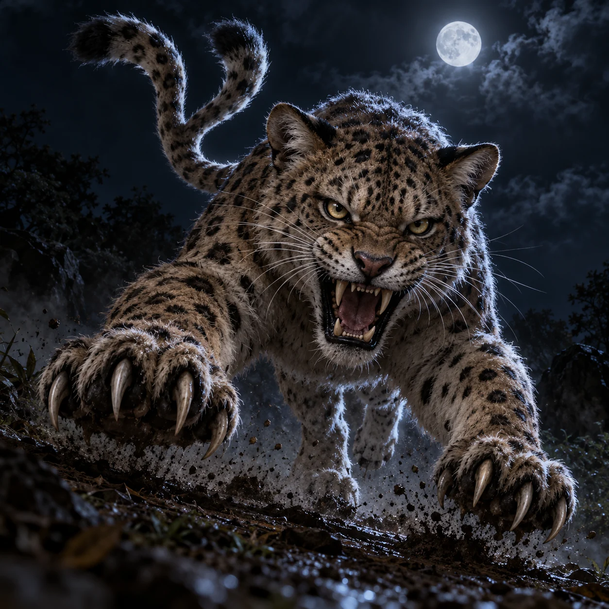
Kogai spotted large cat pounces with one unmistakable Y-forked tail.
Aura: Forkedtail/spottedlargeformc02 and confrontationalpounce convey menace.
Audit ciri dan sumber
- [object Object]
- [object Object]
Native1254 and200 viewed. Seven checks pass: snarling spottedcat dominates, clawpounce and clear Yforktaildanger persist at200, leap/dust physical editorial no magic, one head/twoeyes/fourfelinelegs compatible including one partlyoccludedrearleg, exactlyone sharedbase tail branching into2tips bothvisible, no extraheads/wings/text/glyphs/franchise, unmistakable forkedtail mythiccat rather than ordinarycalmanimal. ChosenKogaic02variant, no mixed mosquito-netpower.
Review sumberONE original square premium painterly cinematic Mitoloka illustration of Ōneko, the large spotted cat with a forked tail from the Japanese Kōgai account.
ANATOMY: one large spotted feline with one head, two eyes, two rounded cat ears, four feline paws, exactly ONE tail that branches into TWO terminal tips in a clear Y after a single shared tail base; no independent second tail, no horns or other extra anatomy [wd-q11437796-c01, wd-q11437796-c02]
MOMENT: Spring directly toward the viewer from darkness, snarl and reach both forepaws forward, curl the long single-base Y forked tail high behind the shoulders so both terminal tips are fully visible.
POWER: no documented power in this chosen Kōgai variant; menace through anatomy, scale and light only; do not add the mosquito-net effect from a different account.
SCALE & CAMERA: extreme low angle; tight dynamic framing with large-cat head and approaching paws dominating, no colossal scale or tiny people, visibly separated fork-tail tips against dark sky.
LIGHT & WEATHER: one narrow moon source, cold rim light across spotted fur and both tail tips, deep walnut shadows, ordinary footfall dust as editorial atmosphere.
SURFACE: rough matted spotted feline fur, wet nose, claws, damp earth.
SETTING: dark near-ground Japanese Kōgai story context with minimal unlettered background; no exact landscape is claimed [wd-q11437796-c02]
MOOD: menacing; dangerous and imposing, never cute, calm or decorative.
HARD CONSTRAINTS: no text, lettering, logo, border, frame or watermark; no extra heads, limbs or fingers; no design borrowed from any film, game, anime or comic; no nudity or explicit gore; no generic glow aura, neon outline or energy ribbons; exactly four legs, exactly one shared-base tail with TWO forked ends, no third tail tip, no magical eyes, markings or symbols, no two independent tails.
岩魚坊主
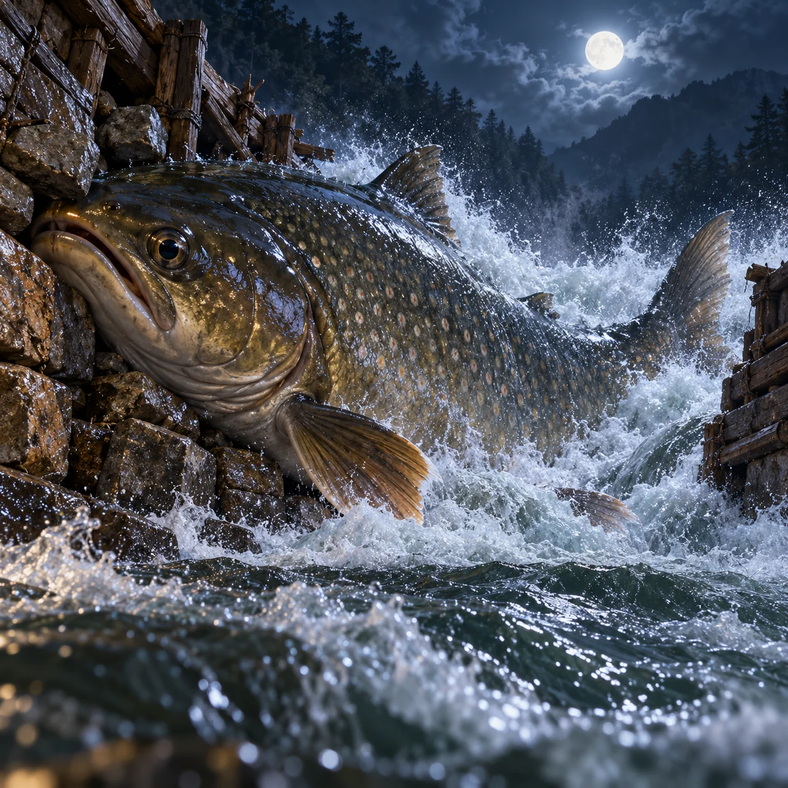
Giant iwana char physically stops embankment breach in protective sacrifice.
Aura: Giant charc06 physically wedged to stop water in sacrificec05 creates protective awe.
Audit ciri dan sumber
- [object Object]
- [object Object]
- [object Object]
Native1254 and200 viewed. Seven Sangar checks pass: giant char head/flank dominate with protective awe at200, body physically wedges brokenembankment and taildrives torrent; breachplugc05 visible without energy, onehead/twoeye anatomy compatibleprofile/onebody/naturalpairedfishfins/dorsal+smalladipose/onefishtail,nohybridbody; no extraheads/limbs/gore/text/glyphs/franchise; not ordinaryfish atrest because protectivebody blocks collapsingbankunder torrent. Giantc06 and deepmountainriverc06. Naturalfin/spotrendering editorial.
Review sumberONE original square premium painterly cinematic Mitoloka illustration of Iwana-bōzu, the giant shapeshifting iwana char of Japanese deep-mountain rivers, here in its self-sacrificing embankment-saving fish form.
ANATOMY: exactly one giant iwana char fish with one fish head, two fish eyes, one continuous scaled fish body, one dorsal fin, paired pectoral fins and paired pelvic fins, a small adipose fin and one forked fish tail; natural char anatomy, dark olive skin with small pale spots; no human body parts [wd-q11475708-c01, wd-q11475708-c05, wd-q11475708-c06]
MOMENT: Drive its enormous living fish body sideways into a broken river embankment toward the viewer, force the head and broad flank tightly against broken stones as its tail lashes the torrent, arrest the escaping floodwater.
POWER: physically plugs a breach in an embankment by sacrificing its body; show the great body wedged across the gap, torrent striking its scales and being held back, no energy magic [wd-q11475708-c05]
SCALE & CAMERA: extreme low angle at the breached bank's water level; giant char head and body fill frame with ordinary embankment stones dwarfed beside it; documented giant scale, no monk-fish hybrid.
LIGHT & WEATHER: one cold moonlit opening above mountain river, strong wet rim light, warm walnut bank shadows, physical river spray and foam.
SURFACE: rough wet char scales, small pale spots, glossy natural fish eyes, crushed wet stone and rough timber in the editorial embankment construction.
SETTING: deep-mountain Japanese river at a broken embankment [wd-q11475708-c05, wd-q11475708-c06]
MOOD: awe-inspiring; dangerous and imposing through sacrificial river power, never cute, calm or decorative; noble protector rather than evil predator.
HARD CONSTRAINTS: no text, lettering, logo, border, frame or watermark; no extra heads, limbs or fingers; no design borrowed from any film, game, anime or comic; no nudity or explicit gore; no generic glow aura, neon outline or energy ribbons; no human face or hands on fish, no horns or claws, no magical eyes or beams, no blood, cut belly or wounds.
麻桶の毛
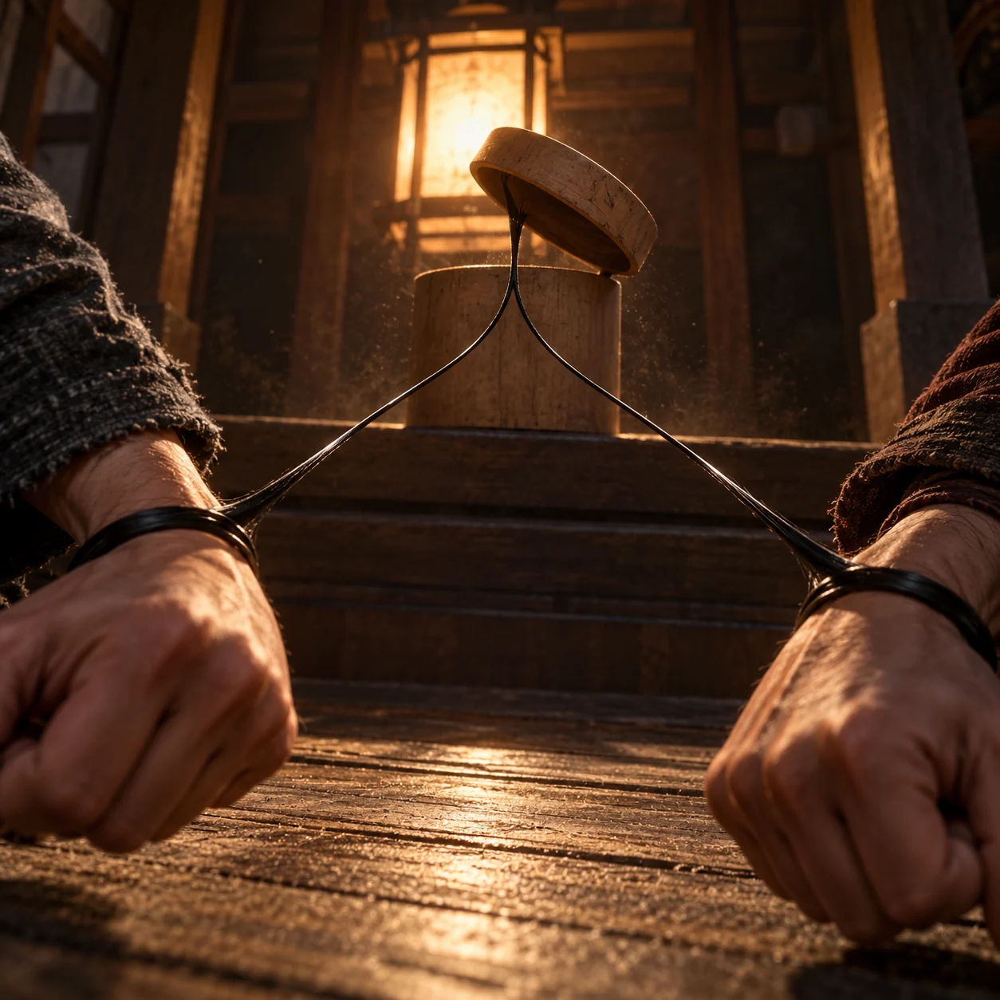
Single sacred hair forks in two, lifts asaoke lid and binds robber wrists.
Aura: Physical hairgrowth/fork/lidpressurec06 and robberrestraintc03 create protective shrineawe.
Audit ciri dan sumber
- [object Object]
- [object Object]
- [object Object]
Native1254 and200 viewed. All seven Sangar checks pass: one shared fineblackhair forks into2 visiblebranches that dominate action by restraining both wristforeground, protective sacred restraint readable at200 with impossible liftedlid, physical fork/growth/lidpressurec06 and robberyrestraintc03 only,no aura; countone sharedstem/twobranches/wristcoils no inventedhairmonster/head/limbs or modernMizukibody; plain shrine/opaqueclothes/noinjury; no text/glyphs/franchise; active documented manifestation rather than inert sacredobject. Strand appears slender at200, no rope/tentacle mass.
Review sumberONE original square premium painterly cinematic Mitoloka illustration of Asaoke-no-ke, the single sacred hair in an asaoke shrine container that grows and binds robbers when the deity is unsettled.
ANATOMY: exactly ONE very long black sacred HAIR emerging from a plain asaoke container, one shared slender stem splits visibly into exactly TWO slender terminal branches; no face, eyes, head, limbs, fur ball or creature body; the hair remains a thin hair strand, never rope or tentacle [wd-q11677502-c02, wd-q11677502-c05, wd-q11677502-c06]
MOMENT: Force the container's loose plain lid upward and extend the two fine branches straight toward the viewer, loop each long branch tightly around a robber's clothed wrist so the robber is visibly restrained without injury; wrists pull in opposite directions while the hair stays taut.
POWER: the sacred hair grows out of the container, splits in two, lifts its lid and binds robbers; show physical taut hair loops and displaced lid, no beams or glow [wd-q11677502-c03, wd-q11677502-c06]
SCALE & CAMERA: extreme low angle and near-macro close framing of the two taut hair branches in foreground; lid/container behind and two clothed adult forearms entering frame from opposite edges give ordinary real size, no enlarged hair thickness; hair and its physical restraining loops are the main subject.
LIGHT & WEATHER: one warm shrine lamp behind the black hair for high-contrast silhouette, restrained silver rim on individual strand, deep walnut shadows, ordinary disturbed dust as editorial atmosphere.
SURFACE: a smooth continuous black hair filament, coarse opaque robber sleeves, worn plain wooden asaoke container and loose unlettered lid.
SETTING: the sacred hair's shrine in Kamo, Tokushima, interior kept plain and respectful with no inscriptions or invented ritual emblems [wd-q11677502-c01, wd-q11677502-c02, wd-q11677502-c05]
MOOD: awe-inspiring; dangerous and imposing through sacred physical restraint, never cute, calm or decorative; respectful living shrine tradition, protective rather than evil.
HARD CONSTRAINTS: no text, lettering, logo, border, frame or watermark; no extra heads, limbs or fingers; no design borrowed from any film, game, anime or comic; no nudity or explicit gore; no generic glow aura, neon outline or energy ribbons; no hairy monster mass, Mizuki character, tentacles, ropes, thickening, multiple independent hairs, face or body; exactlyONEstem forked intoTWOends; no victims injured or bleeding.
Rain Bull
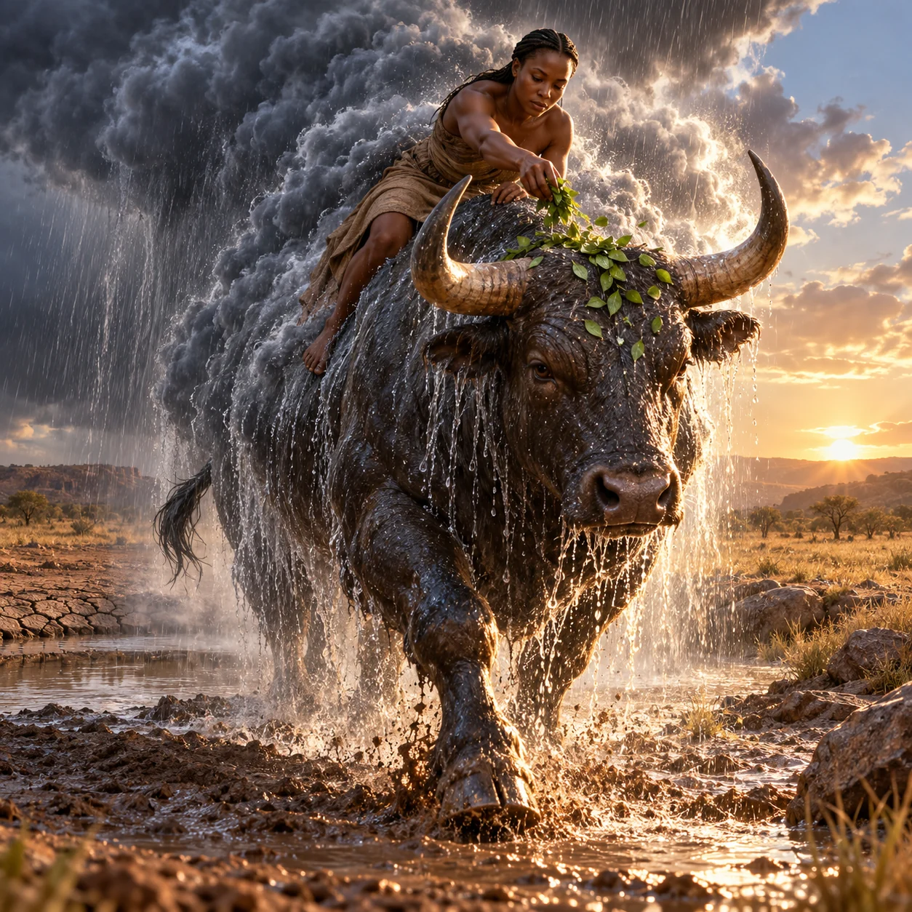
The living Rain Bull carries Kua as she scatters buchu over his forehead, rain traveling with his body and a drying pit behind him.
Aura: Rain takes bovine form c04/c12 and moves with him c02; Kua rides and scatters buchu c10/c13/c14 while the pit dries c16.
Audit ciri dan sumber
- [object Object]
- [object Object]
- [object Object]
Agen utama melihat PNG asli dan thumbnail 200px. Satu banteng, dua tanduk, dua mata dan empat kaki dengan oklusi alami; Kua dewasa berpakaian buram jelas menunggang dan menaburkan buchu di dahi c10/c13/c14. Awan melekat pada tubuh dan tirai hujan berpindah c02/c04/c12, bumi kering serta kolam menyusut di belakang c16. Gerak melangkah dan tetes air nyata, tanpa petir, tulisan, jahitan edit, aura generik atau gore. Ketujuh uji sangar lulus.
Review sumberONE original square premium painterly cinematic Mitoloka illustration of the Rain Bull, the living Rain in bull form in San mythology, carrying the adult woman Kua. ANATOMY: exactly one powerful bull body, one head, two horns, two eyes, four bovine legs and one tail; on its back one fully clothed adult woman Kua in plain opaque earth-colored woven wrap covering chest and thighs. [wd-q12279265-c04,c10,c12,c14] MOMENT: the Rain Bull strides diagonally toward the viewer out of a drying water pit, Kua leaning forward on its back and visibly scattering a handful of small green buchu leaves onto the bull's forehead between its horns. [c10,c13,c14,c16] POWER: make the bull unmistakably the Rain itself: the animal emerges from a dense body-hugging storm cloud shaped by its shoulders and back, heavy rain streams physically downward from its mane, flanks and surrounding moving cloud, creating a sharply bounded curtain ONLY along the animal's path; outside that moving curtain the distant earth and sky are clear and dry. Behind its hind feet, the water pit is already drying to cracked mud. No ordinary landscape-wide rain. No lightning or beams. [c02,c04,c12,c16] SCALE & CAMERA: close three-quarter low view, bull fills the square from horns to hooves, rider clearly visible and not tiny; natural bull scale, no giant inflation. LIGHT & WEATHER: one break of warm low sun sharply rim-lights the bull, rider, individual leaves and cascading rain against dark walnut storm shadows. SURFACE: wet coarse dark hide, textured horns and hooves, dull opaque cloth, individual glossy buchu leaves, churned wet mud in front and drying pit behind. SETTING: minimal southern African water pit, travel through the boundary between living rain and dry earth. [c02,c16] MOOD: overwhelming, benevolent, life-giving living Rain, respectful to a living tradition; forceful motion and imposing body, never a placid farm bull. HARD CONSTRAINTS: no text, lettering, signatures, pseudo-writing, symbols, logo, border, frame, watermark, rectangular patches or collage seams; no extra heads or limbs, no nudity or explicit gore, no neon aura, energy ribbons, magical tattoos, no borrowed film/game/anime/comic design. Original full-image generation, not an edit.
比肩兽
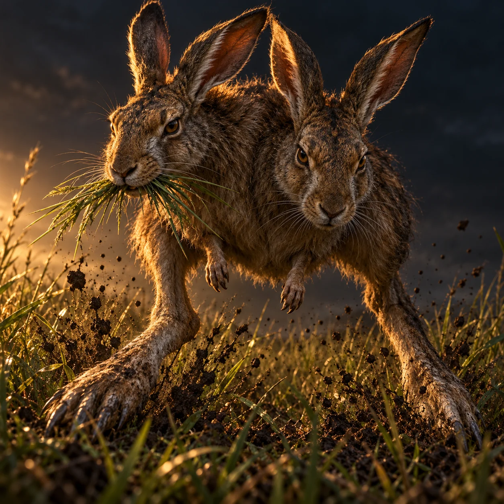
A two-headed Jue with hare heads and fur, two short ratlike forefeet, and two elongated hare hindfeet leaps while carrying sweet grass.
Aura: Auspicious awe comes from the two heads (c01), radically unequal rat and hare feet (c05/c08), and forceful physical leap (c08), without magical effects.
Audit ciri dan sumber
- [object Object]
- [object Object]
- [object Object]
Viewed the native 1254x1254 PNG and a 200x200 thumbnail. All seven Uji Sangar items pass: (1) two-headed subject dominates; (2) stern forward eyes, shared two-headed body and dramatically long hindfeet retain uncanny imposing presence at 200px without making this auspicious creature evil; (3) forceful landing throws soil and grass; (4) soil motion is physical leaping c08 and grass provision c03/c05, with no supernatural effects; (5) exactly two heads, four hare ears, one torso, two tiny ratlike forefeet and two very long hare hindfeet are readable; (6) no lettering, signature, watermark or border and no borrowed entertainment design; (7) unusual single-body anatomy, stern faces and landing distinguish it from an ordinary/cute/placid animal. Natural grass provides small-animal scale.
Review sumberONE original square premium painterly cinematic Mitoloka illustration of Bijianshou or Jue, the auspicious two-headed hare-and-rat animal of Chinese tradition.
ANATOMY: Exactly TWO separate adult hare heads side by side on ONE shared furred torso. Both entire faces and all FOUR long ears are fully inside the square with margin above their tips. Exactly FOUR limbs in total: TWO extremely short ratlike front legs with tiny clawed forefeet, and TWO dramatically longer hare hind legs ending in extremely long narrow hindfeet. The front feet are only about ONE TENTH the length of the hindfeet (one cun versus nearly one chi). Tiny forepaws hang separately beneath the chest. The two elongated hindfeet stretch diagonally forward beneath the single body with a clear gap between them, their long heel-to-toe shapes unambiguous. Coarse dark brown-grey adult hare fur, long angular lean mature hare faces, small narrowly slit wild eyes under furrowed natural brow ridges. Angular bony cheeks and flattened ears sweeping backward emphasize extraordinary wild dignity. No round glossy baby eyes, no smiling expression, no extra feet [wd-q15955445-c01, wd-q15955445-c05, wd-q15955445-c08]
MOMENT: Hurtle forward and brake directly in front of the viewer, both long hindfeet forcefully gouging soil beneath the airborne chest in a decisive landing, body pitched toward the camera. One head grips a bitten tuft of sweet grass; the other head looks toward the viewer with unblinking severe wild focus. Both long hindfeet and both tiny rat forefeet are fully visible and separated [wd-q15955445-c03, wd-q15955445-c05, wd-q15955445-c08].
POWER: No documented supernatural power; awe comes from the impossible two-headed anatomy, dynamic leap, and light. Only ordinary gritty earth and grass thrown violently by the landing, no magic [wd-q15955445-c08].
SCALE & CAMERA: Grass-level extreme low angle, tight three-quarter frontal full-animal view; both heads, all four ears and all FOUR limbs fit inside the square. The animal fills most of the image but retains small natural hare scale, with ordinary tall grass reaching its chest. No giant scale or human miniatures.
LIGHT & WEATHER: One hard low amber shaft from the left cuts through a nearly black dusk scene. Strong sculptural side light on half of each stern adult face, opposite halves almost black; antique-gold rim along ears and long hindfeet. No visible sun, no bright golden sky, no soft pastoral sunset. Violently thrown ordinary soil and grass around the feet.
SURFACE: Dense coarse adult hare fur with sharp bristles and earth on the long hindfeet; thin ratlike clawed forefeet; damp blades of sweet grass.
SETTING: A minimal northern grass patch, referring to the northern Jue account, editorial terrain without invented architecture [wd-q15955445-c05, wd-q15955445-c08].
MOOD: Austere and awe-inspiring through startling anatomy and energetic movement. This is auspicious and cooperative, never evil; preserve wild adult dignity, never cute, placid, smiling or decorative.
HARD CONSTRAINTS: no text, lettering, signature, logo, border, frame or watermark; exactly two heads on ONE torso, exactly two tiny rat forefeet and two extremely elongated hare hindfeet, no extra body or limbs; no horns, wings, fangs, glowing eyes or tattoos; no design borrowed from any film, game, anime or comic; no nudity or explicit gore; no generic glowing aura, neon outline or energy ribbons.